Fjod Priprava Ustni
Table of Contents
- 1. Nomenklatura in formalizem
- 2. Sipalna matrika
- 3. Perturbativni račun (teorija motenj)
- 4. Splošneje o faznem prostoru pri reakcijah
- 5. Lorentz invarianten zapis \( \mathrm{d} PS \)
- 6. \( \gamma \) sevanje/ prehodi \( \gamma \)
- 7. Razpadi \( \beta \)
- 8. Razpadi \( \alpha \)
- 9. Fizika osnovnih delcev
1. Nomenklatura in formalizem
Pri Moderni fiziki 1 in 2 smo četverec gibalne količine zapisali kot
\[ p^{\mu} = \left( \frac{E}{c_0}, \vec{p} \right) \]
vendar bomo zaradi manj natrpanega zapisa pri predmetu Fizike jedra in osnovnih delcev uporabljali naravne enote (ang. natural units), kar pomeni, da \( \hbar = c_0 (= \epsilon_0) = 1 \).
Metrični tenzor zapišemo kot
\[ g^{\mu \nu} = g_{\mu \nu} = \begin{bmatrix} 1 & & & \\ & -1 & & \\ & & -1 & \\ & & & -1 \end{bmatrix} \]
in velikost gibalne količine bomo zapisali z Einsteinovo konvencijo. Torej bo vsota \( \sum\limits_{\mu = 0}^3 p^{\mu} p_{\mu} \) postala
\[ p^{\mu} p_{\mu} = g_{\mu \nu} p^{\mu} p_{\nu} \]
Rad bi posebej poudaril, da, ker imamo opravka s četverci, gre vsota od \( 0 \) do \( 3 \) in ne od \( 1 \) do \( 3 \).
skalarni produkt
Za četverca \( p^{\mu} = \left( E, \vec{p} \right) \) in \( p_{\mu} = \left( E, \vec{p} \right) \) je njun skalarni produkt (ang. inner product) definiran kot
\[ p_{\mu} p^{\mu} = E ^2 - \left| \vec{p} \right| ^2 = p ^2 = p \cdot p \]
Za drugačne četverca \( p \) in \( q \) pa lahko splošno zapišemo kot
\[ p \cdot q = p^{\mu} \cdot q_{\mu} = p_{\mu} q ^{\mu} = p_0 q_0 - \vec{p} \cdot \vec{q} \]
zunanji produkt Za četverca \( p^{\mu} \in \mathbb{R}^4 \) in \( q^{\mu} \in \mathbb{R}^4 \) je rezultat zunanjega produkta (ang. outer product) \( 4 \times 4 \) matrika.
\[ p^{\mu} q^{\nu} = T^{\mu \nu} \quad \text{ ali } \quad p^{\mu} q_{\nu} = T^{\mu}_{\nu} \]
Poglejmo (novo) uvedeno notacijo na primeru ravnega vala.
Ravni val je oblike
\[ e^{\mathrm{i} \left( \vec{k} \vec{r} - \omega t \right)} \]
Definicija valovnega vektorja je \( \vec{k} = \frac{\vec{p}}{\hbar} \) in definicija valovanja je \( \omega = \frac{E}{\hbar} \). Zaradi naravnih enot torej sledi \( \vec{k} = \vec{p} \) ter \( \omega = E \).
Torej je naš novi zapis za ravni val, definiran preko četvercev enak \( e^{- \mathrm{i} p \cdot x} \), saj za skalarni produkt v eksponentu velja
\begin{align*} p \cdot x = p^{ \mu}x_{\mu} &= \left( E, \vec{p} \right) \cdot (t, - \vec{r}) \\ &= E \cdot t - \vec{p} \,\cdot \vec{r} \\ &= - \left( \vec{k} \cdot \vec{r} - \omega t \right) \end{align*}Z uvedeno notacijo se tako spremeni tudi invarianca mase.
Za invarianco mase velja
\[ p^{\mu}p_{\mu} = E ^2 - \left| \vec{p} \right| ^2 = m ^2 \]
oziroma
\[ E ^2 = \left| \vec{p} \right| ^2 + m ^2 \]
Transormacija potiska (ang. boost) v smeri \( x \) velja
\[ \Lambda x ^{\mu} _{\nu} = \begin{bmatrix} \gamma & -\beta \gamma & & \\ -\beta \gamma & \gamma & & \\ & & 1 & \\ & & & 1 \end{bmatrix} \]
kjer je \( \beta = v \) in \( \gamma = \frac{1}{\sqrt{1 - \beta ^2}} \), saj je \( c_0 = 1 \).
Kot primer si lahko pogledamo tudi invariantno maso sistema delcev oz. razpoložljivo energijo.
Obravnavamo enega izmed primerov na spodnji sliki

Za primera velja ohranitev mase, torej
\begin{equation} \label{eq:1} M ^2 = (p + q) ^2 \end{equation}Razpis same enačbe \ref{eq:1} lahko zapišemo na dva možna načina.
Prvi način je samo razpis
\[ (p + q) ^2 = p ^2 + q ^2 + 2 p \cdot q \]
Pri drugem načinu pa upoštevamo prej povedano definicijo skalarnega produkta
\[ (p + q) ^2 = (E_p + E_q) ^2 - (\vec{p} + \vec{q}) ^2 \]
V splošnem, upoštevajoč masi delcev \( p \) in \( q \) pa je
\[ M ^2 = m_p ^2 + m_q ^2 + 2 E_p E_q - 2 \vec{p} \cdot \vec{q} \]
Če se sedaj postavimo v težiščni sistem (ang. center-of-mass system oz. krajše CMS), kjer velja \( \vec{p} = - \vec{q} \), se naša enačba še dodatno pretvori v
\begin{equation} \label{eq:2} \begin{aligned} M ^2 &= m_p ^2+ m_q ^2 + 2E_p E_q + 2 \left| \vec{p} \, \right| ^2 \\ &= m_p ^2 + m_q ^2 + 2 \sqrt{m_p ^2 + \left| \vec{p} \, \right| ^2} \cdot \sqrt{m_q ^2 + \left| \vec{p} \,\right| ^2} + 2 \left| \vec{p} \, \right| ^2 \end{aligned} \end{equation}Stanley Mandelstam je uvedel oznako \( s = M ^2 \) za invariantno maso oz. razpoložljivo energijo. Pri analizah v trkalnikih se nahajamo v CMS ter velja še dodatno \( m_q = m_p \), iz česar in enačbe \ref{eq:2} tako sledi
\[ E_p = \frac{\sqrt{s}}{2} \]
Mnogi članki iz LHC-ja imajo v naslovu Observation of Higgs Boson at \( \sqrt{s} = \text{sth} \) podano to vrednost razpoložljive energije.
Prav tako iz zapisa
\[ s_{pq} = \left[ \left( s - (m_p + m_q) ^2 \right) \left( s - (m_p - m_q) ^2 \right) \right] ^{\frac{1}{2}} \]
pa sledi zapis za gibalno količino
\[ \left| \vec{p} \right| = \frac{s_{pq}}{2 \sqrt{s}} \]
Poglejmo si še en zgled, tokrat zavorno sevanje.
Zavorno sevanje (ang. in nem. brems strahlung) je dogodek, ko delec izseva foton \( \gamma \).
V laboratorijskem sistemu izsevanje predstavimo s Feynmannovim diagramom na sledeči način:
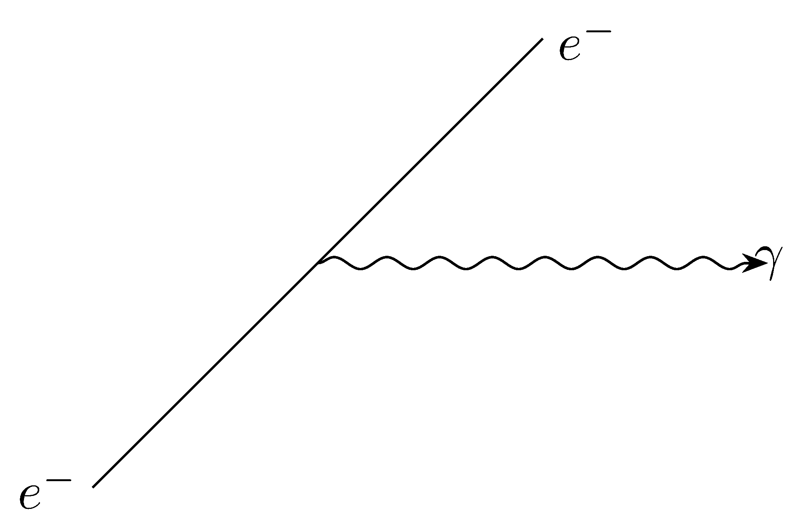
oziroma v CMS-ju
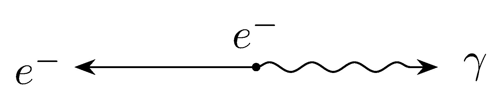
Elektron ima maso \( m_e = m_p \), medtem ko je naš drugi delec foton ima maso \( m_q = m_{\gamma} = 0 \).
Ponovno upoštevajoč enačbo za razpoložljivo energijo \ref{eq:2} in
\[ M ^2 = (m_e + m_{\gamma}) ^2 = m_e ^2 = s \]
sledi
\begin{align*} m_e ^2 &= m_e ^2 + m_{\gamma} ^2 + 2 E_e E_{\gamma} + 2 \left| \vec{p}\, \right| ^2 \\ 0 &= 2 E_e E_{\gamma} + 2 \left| \vec{p}\, \right| ^2 > 0 \end{align*}kar je kinematično nemogoča reakcija, saj je energija večja od \( 0 \). To je fizikalno tudi portjeno, saj delec, ki se giblje naravnost, ne oddaja zavornega sevanja.
Delci v LHC pa krožijo zaradi česar tudi pospešujejo in oddajajo zavorno sevanje.
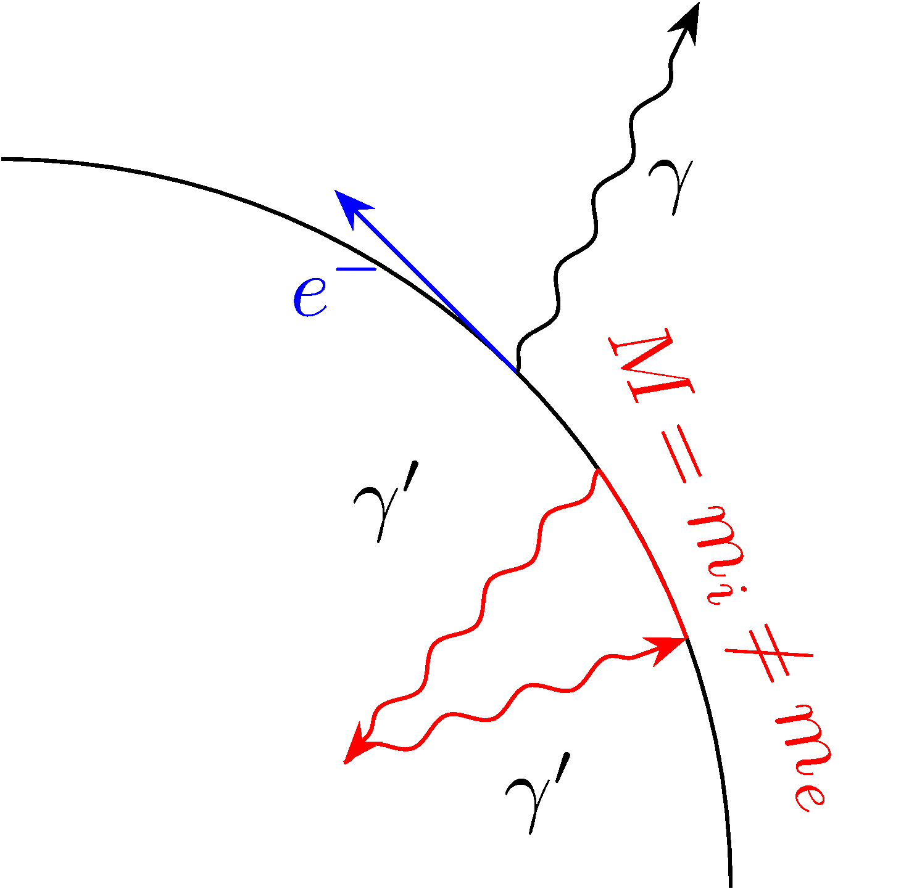
Dodali smo virtualen delec \( \gamma' \) in zanima nas, kaj se zgodi v vmesnem rdečem pobarvanem stanju.
Vmesno stanje lahko rešimo na dva načina:
- preko kinematike lahko rečemo, da se v vseh trenutkih po vseh vsotah ohranjajo količine ter da velja \( M = m_e ^{\ast} \)
- preko kvantne mehanike, kjer upoštevamo princip nedoločenosti in energija lahko niha, dokler zadost pogoju \( \delta E \delta \tau \ge \hbar \)
Za nas bo boljša izbira kinematika in zato uvedemo nestabilno/virtualno stanje \( p ^2 = m_e ^{\ast 2} = M ^2 \ne m_e ^2 \). Tej gibalni količini \( p \) rečemo po angleško off-shell oz. off-mass-shell in zanjga velja \( \delta m \cdot \delta \tau \ge 1 \) (saj je \( \hbar = 1 \)). Za stabilno oz. realno stanje pa velja \( p ^2 = m_e ^2 \)
Sipanje/odboj - graf
Comptonovo sipanje - Feynmannov diagram
2. Sipalna matrika
Sipalna matrika (nem. streumatrix, ang. redko uporabljeno scattering matrix), skrajšano S-matrix je matrika, ki nam pove odnos med začetnim in končnim stanjem sistema, ki se siplje.
Za začetno stanje \( \left| \Psi_i \right\rangle \) ob času \( t = - \infty \) se zgodi nek proces ali interakcija, ki ga označimo s \( S \) ali z operatorjem \( \hat{S} \), ki nas ponese v končno stanje \( \left| \Psi_f \right\rangle \) ob času \( t = \infty \).
\[ \left| \Psi_i \right\rangle \to \left| \Psi_i ' \right\rangle = \hat{S} \left| \Psi_i \right\rangle \]
kjer je \( \Psi_i ' \) stanje, ki nas je poneslo v \( \left| \Psi_f \right\rangle \).
Na koncu dneva nas zanima verjetnost, da se ta proces zgodi oz. da pridemo iz začetnega v končno stanje \( P_{i \to f} \).
Verjetnost \( P_{i f} \) je kvadratno sorazmerna matričnemu elementu \( \left| M_{i f} \right| \).
Ob času \( t = \infty \) je matrični element enak
\[ M_{if } = M_{i \to f} = \left\langle \Psi_f \middle| \Psi_i ' \right\rangle = \underset{\leftarrow}{\left\langle \Psi_f \middle| S \middle| \Psi_i \right\rangle} \]
kjer puščica označuje smer branja matričnega elementa S-matrike (ang. matrix element of the S-matrix).
Za podano (neskončno) števno ortonormirano bazo \( \left\{ \phi_n \right\} \) lahko valovno funkcijo razvijemo
\[ \Psi(x) = \sum\limits_n^{} c_n \phi_n (x) \]
Za bazo velja enakost
\[ \int\limits_{}^{} \phi_n^{\ast} \phi_m \, \mathrm{d} x = \delta_{mn} \]
Preko te lastnosti ortonormiranosti torej lahko določimo posamezne koeficiente
\[ \int\limits_{}^{}\phi_m^{\ast} \Psi \, \mathrm{d} x = \int\limits_{}^{} \phi_m ^{\ast} \sum\limits_n^{} c_n \phi_n \, \mathrm{d} x = \sum\limits_n^{} c_n \delta_{mn} = c_m \]
Po Diracu lahko se baza spremeni iz \( \left| \phi_n \right\rangle \) v \( \left| n \right\rangle \) in je naš nov zapis po bazi
\[ \Psi(x) = \sum\limits_n^{} c_n \left| n \right\rangle \]
Po Diracu pa koeficiente določimo z novo notacijo
\[ \left\langle m\middle| \Psi \right\rangle = \sum\limits_n^{} c_n \left\langle m \middle| n \right\rangle = \sum\limits_n^{} c_n \delta_{mn} = c_m \]
Opremljeni s tem znanjem, lahko začetno in končno stanje razvijemo po bazi
\[ \left| \Psi_i \right\rangle = \sum\limits_j^{} c_j \left| j \right\rangle \]
s koeficienti \( c_j = \left\langle j \middle| \Psi_i \right\rangle \) ter
\[ \left| \Psi_f \right\rangle = \sum\limits_k^{} b_k \left| k \right\rangle \]
s koeficienti \( b_k = \left\langle k \middle| \Psi_f \right\rangle \).
Matrični element \( M_{if } \) tako predstavimo s
\[ \sum\limits_{k, j}^{} b_k \left\langle k \middle| S \middle| j \right\rangle c_j = \vec{b}^{\, T} [S_{ij }] \vec{c}, \quad \vec{b} = \begin{bmatrix} b_{1} \\ \vdots \\ b_{n} \\ \vdots \end{bmatrix}, \, \vec{c} = \begin{bmatrix} c_{1} \\ \vdots \\ c_{n} \\ \vdots \end{bmatrix} \]
Če je S-matrika enaka identiteti \( I \), pomeni, da smo iz enega stanja prešli v isto stanje \( \left\langle j \middle| S \middle| j \right\rangle \). Nam zanimive stvari se dogajajo v S-matriki izven diagonale. Torej jo lahko zapišemo kot kombinacijo identitete \( I \) ter izvendiagonalnih elementov \( R \).
\[ S = I + R \]
Interakcijo delcev \( e^- \) ter \( \mu^- \) lahko zapišemo v vrsto. V 0. redu se ne zgodi nič, v 1. si izmenjata en foton, v 2. redu pa dva, itd.
[slika]
Izvendiagonalno matriko zapišemo kot
\[ \underline{\underline{R}} = N \left( - \mathrm{i} \right) \left( 2 \pi \right) ^4 \sigma^{(4)} \left( \sum\limits_n^{} p_n^{\mu} - p^{\mu}_{TOT} \right) \underline{\underline{T}} \]
kjer je \( N \) normalizacijska konstanta, ki pride iz začetnega stanja \( \left| \Psi_i \right\rangle \). \( \left( - \mathrm{i} \right) \) je tukaj zaradi kvantne mehanike.
Člen
\[ \left( 2\pi \right) ^4 \delta^{(4)} \left( \sum\limits_n^{} p^{\mu}_n - p^{\mu}_{TOT} \right) \]
je zahteva relativizma za ohranjanje gibalne količine in energije. Poleg tega je matrika \( \underline{\underline{T}} \) samo matrika \( T_{f i} \).
Člen, ki ga zahteva relativizem srečam prvič, prav tako nisem prepričan, kaj je matrika \( \underline{\underline{T}} \). Moje ugibanje bi bilo, da je to matrika, ki izhaja iz operatorje kinetične energije \( \hat{T} \).
Operator \( \hat{S} \) je unitaren. V matematiki to pomeni, da je preslikava bijektivna in izometrija (ohranja razdalje/skalarni produkt). V fizikalnem žargonu to pomeni, da ohranja verjetnost. Izometrija nam pove, da velja \( \hat{S}^{\dagger} \hat{S} = I \), kjer je \( \hat{S}^{\dagger} \) sebi-adjungiran operator. Posledično tudi velja \( \hat{S}^{\dagger} = \hat{S}^{-1} \) in \( S_{ij} ^{\dagger} = S^{\ast}_{ji} \).
Definiramo unitaren operator razvoja sistema
\[ U(t, t_-) = \exp \left\{ - \mathrm{i} \int\limits_{t_-}^t H(\tau) \, \mathrm{d} \tau \right\} \]
kjer je \( t_- = - \infty \) in je \( H(\tau) \) hermitski operator, v našem primeru Hamiltonian. Velja
\[ S = \lim_{t \to \infty} U (t, t_-) \]
Zapišemo
\[ \left| \Psi(t) \right\rangle = U(t, t_-) \left| \Psi(t_-) \right\rangle \]
in za odvod velja
\[ \frac{\partial }{\partial t} \left| \Psi(t) \right\rangle = H(t) U(t, t_-) \left| \Psi(t_-) = H(t) \left| \Psi(t) \right\rangle \right\rangle \]
Not sure what this all means. Will have to explore, ko imam čas.
3. Perturbativni račun (teorija motenj)
Ideja teorije motenj je to, da predpostaviš simetrično kravo. Joke aside, ideja je zelo podobna šali sferične krave, saj nam teorija motenj omogoča, da kompleksnejši (kvantni) sistem (kvantno kravo) predstavimo z enostavnejšemi, lažje izračunavljivimi sistemi (sferično kvantno kravo).
Hamiltonov operator naj bo sestavljen iz dveh delov:
\[ \hat{H} = \hat{H}_0 + \delta \hat{H} = \hat{H}_0 + \hat{H}' \]
Operator \( \hat{H}_0 \) je 0. približek, ki definira osnovno bazo v Hilbertovem prostoru. To je lahko npr. harmonski oscilator ali pa vodikov atom - oba enostavna in zelo dobro razumljena sistema. Operator \( \delta \hat{H} = \hat{H}' \) pa je je interakcija, ki nas zanima - motnja, popravek, itd.
Možnost je tudi, da definiramo \( \hat{H}_0 = \hat{K} = - \frac{1}{2m} \nabla ^2 \), kjer so potem lastna stanja ravni valovi \( \left| \Psi_k \right\rangle = \frac{e^{- \mathrm{i} px }}{\sqrt{V}}\), kot interakcijo pa lahko tako vzmamemo \( \delta \hat{H} = \hat{V} \).
Osnovni Hamiltonian nam poda diskretni spekter z ortogonalno bazo \( \left| n^0 \right\rangle \) energijskih lastnih stanj.
\[ H_0 \left| n ^0\right\rangle = E_n^{(0)} \left| n^{0}\right\rangle \]
kar nam poda rešitev za \( n \)-to stanje valovne funkcije
\[ \left| \Psi_n (t) \right\rangle = e^{- \mathrm{i} E_n t} \left| n \right\rangle \]
Valovno funkcijo ponovno razvijemo po bazi
\[ \left| \Psi (t) \right\rangle = \sum\limits_n^{} \left| \Psi_n (t) \right\rangle = \sum\limits_n^{} a_n (t) e^{- \mathrm{i} E_n t} \left| n \right\rangle \]
Vstavimo razvoj sedaj v Schrödingerjevo enačbo
\[ \mathrm{i} \frac{\partial }{\partial t} \left| \Psi(t) \right\rangle = H \left| \Psi(t) \right\rangle \]
Upoštevamo odvod produkta ter Hamiltonov operator s perturbacijo
\[ \sum\limits_n^{} \mathrm{i} \frac{\partial }{\partial t} a_n (t) \left| \Psi_n (t) \right\rangle + \cancel{\sum\limits_n^{} \mathrm{i} a_n \frac{\partial }{\partial t} \left| \Psi_n (t) \right\rangle} = \cancel{H_0 \sum\limits_n^{} a_n \left| \Psi_n (t) \right\rangle} + H' \sum\limits_n^{} a_n \left| \Psi_n (t) \right\rangle \]
kjer se pokrajšata, ker je enako za 0. red. S predpostavko, da sta \( k \) in \( n \) enaki bazi in sta ortogonalni stanji, pomnožimo zgornjo enačbo z \( \left\langle \Psi_k \right| \), iz česar sledi
\[ \sum\limits_n^{} \mathrm{i} \frac{\partial }{\partial t} a_n (t) \left\langle \Psi_k (t) \middle| \Psi_n (t) \right\rangle = \sum\limits_n^{} a_n \left\langle \Psi_k (t) \middle| H' \middle| \Psi_n (t) \right\rangle \]
oziroma na koncu dobimo izraz za prehod med stanji
\[ \mathrm{i} \frac{\partial a_{n}}{\partial t} = \sum\limits_n^{} \left\langle k \middle| H' \middle| k\right\rangle a_n e^{\mathrm{i} (E_k - E_n) t} \]
Dobljeno lahko zapišemo tudi z matričnim zapisom kot
\[ \mathrm{i} \odv{a} = \underline{\underline{\hat{O}}} (t) \cdot \odv{a} \]
Poleg tega lahko iterativno rešujemo tudi implicitno obliko integralske enačbe
\[ \mathrm{i} a_k (t) = \sum\limits_n^{} \int\limits_0^t \left\langle k \middle| H' \middle| k\right\rangle e^{\mathrm{i} (E_k - E_n) t} a_k (t) \, \mathrm{d} t \]
Namesto desnega \( a_k \) lahko vstavimo približek, in določimo nov približek na levi strani. Postopek ponavljamo do željene natančnosti.
Za 0. približek je \( H' = 0 \) in posledično \( \dot{a}_k = 0 \). Začetno stanje naj bo lastno \( n = i \), torej
\begin{align*} a_i (t = 0) &= 1 \\ a_{i \ne n} (t = 0) &= 0 \end{align*}Po integriranju dobimo
\begin{equation} \label{eq:10} \mathrm{i} a_k (t) = \int\limits_0^t 1 \cdot e^{\mathrm{i} (E_k - E_i) \tau} \left\langle k \middle| H' \middle| i\right\rangle \, \mathrm{d} \tau \end{equation}kjer predpostavimo, da \( \left\langle k \middle| H' \middle| i\right\rangle \) ni časovno odvisen in tako sledi rešitev
\[ \mathrm{i} a_k (t) = \left\langle k \middle| H' \middle| i\right\rangle \left( e^{\mathrm{i} (E_k - E_i)t} - 1 \right) \frac{1}{\mathrm{i} (E_k - E_i)} \]
Zanima nas verjetnost \( P_{i \to f} \), zato izračunamo
\[ \left| a_k (t) \right| ^2 = \left| \left\langle k \middle| H' \middle| i\right\rangle \right| ^2 4 \sin ^2 \left[ \frac{(E_k - E_i)t}{2} \right] \frac{1}{(E_k - E_i) ^2} \]
kjer smo upoštevali
\[ e^{\frac{\mathrm{i}}{2} (E_k - E_i) t} \left[ e^{\frac{\mathrm{i}}{2} (E_k -E_i)t} - e^{-\frac{\mathrm{i}}{2} (E_k -E_i) t} \right] = e^{\frac{\mathrm{i}}{2} (E_k - E_i)t} \cdot \sin \left[ \frac{(E_k - E_i) t}{2} \right] \]
ter, da je \( \left| e^{\mathrm{i} x} \right| = 1 \).
Hamiltonian, na katerem smo, ima diskreten spekter, kar pomeni, da so tudi \( k \) diskretni (npr. kristali). Hkrati pa velja, da so \( \Psi_f \) ravni valovi zvezni, zato našo verjetnost predelamo na zvezno verjetnostno gostoto.
Uvedemo interval \( D_k = \left[ E_k - \Delta E, E_k + \Delta E \right] \), po katerem sedaj intergriramo
\[ \left| a_k \right| ^2 = \int\limits_{D_k}^{} \rho(E_f) \, \mathrm{d} E_f \]
kar je verjetnost za prehod v to specifično stanje \( k \).
Če nas ne zanima, v katero končno stanje preide, seštejemo vse možnosti:
\[ P (t) = \int\limits_{D_k}^{} \rho(E_f) \underbrace{\left| \left\langle f \middle| H' \middle| i\right\rangle \right| ^2}_{\not \propto t} \, \sin ^2 \left[ \frac{(E_f - E_i)t}{2} \right] \frac{1}{\left( E_f - E_i \right) ^2} \, \mathrm{d} E_f \]
Kako integriramo to? Uvedemo novo spremenljivko \( \omega = E_f - E_i \) in \( \mathrm{d} \omega = \mathrm{d} E_f \), kar prevede naš integral na
\[ \int\limits_{}^{} \frac{\sin ^2 (A\omega)}{ \omega ^2} \, \mathrm{d} \omega = \pi A \]
oz. na
\[ \approx \int\limits_{}^{} \pi A \delta(\omega) \]
za \( A = \frac{t}{2} \). Pri \( \omega = 0 \) velja \( E_f = E_i \), kar pomeni, da je \( \rho(E_f) = \rho(E_i) \). Integrirana vrednost je tako
\[ P(t) = \frac{\pi t}{2} 4 \left| \left\langle f \middle| H' \middle| i \right\rangle \right| ^2 \rho(E_i) \]
Po dolgem času verjetnost narašča linearno, kar pomeni, da je hitrost naraščanja konstantna, iz česar sledi Fermijevo zlato pravilo
\[ \frac{\mathrm{d} P}{\mathrm{d} t} = w_{i \to f} (t) = 2 \pi \left| \left\langle f \middle| H' \middle| i\right\rangle \right| ^2 \rho(E_i) \]
Matrični element \( \left| \left\langle f \middle| H' \middle| i\right\rangle \right| ^2\) označuje verjetnost za prehod - bodisi \( V_{ij}, R_{ij}, \mathcal{M}_{ij} \) ali kaj drugega. Hkrati pa je je \( \rho(E_i) \) fazni prostor (ang. phase space) - koliko možnih stanj imamo.
[slika]
Predpostavimo, da sta začetna in končna valovna funkcija ravna vala
\begin{align*} \Psi_i &\sim e^{\mathrm{i} p_i x} \\ &= e^{- \mathrm{i} E_i t + \vec{p}_i \vec{r}_i} \\ \Psi_f & \sim e^{\mathrm{i} p_f x} \end{align*}Predpostavimo prav tako elastično sipanje, torej se gibalna količina ohranja \( \left| \vec{p}_i \right| = \left| \vec{p}_f \right|\).
Gostoto končnih stanj zapišemo kot
\[ \mathrm{d} N_f = \frac{\mathrm{d} ^3 \vec{r} \, \mathrm{d} ^3 \vec{p}}{\hbar ^3} \overset{\hbar = 1}{=} V_n \frac{\mathrm{d} ^3 p }{\left( 2 \pi \right) ^3} \]
kjer smo uvedli oznako normiranega volumna \( V_n \).
Za prehod iz začetnega v začetno stanje velja
\[ \left\langle i \middle| i \right\rangle = \int\limits_{V_n}^{} \left| \Psi_i (r) \right| ^2 \, \mathrm{d} r ^3 = c \cdot V_n \]
iz česar sledita normalizirani funkciji
\begin{align*} \Psi_i \left( \vec{r} \right) &= \frac{1}{\sqrt{V_{n}}} e^{\mathrm{i} p_i x} \\ \Psi_f \left( \vec{r} \right) &= \frac{1}{\sqrt{V_{n}}} e^{\mathrm{i} p_f x} \end{align*}Gostoto končnih stanj \( \mathrm{d} N_f \) bi radi izrazili v odvisnosti od energije in ne od gibalne količine. Drugače povedano, želimo gostoto energijskih stanj
\[ \mathrm{d} \rho(E) = \frac{\mathrm{d} N_{f}}{\mathrm{d} E} \]
Z upoštevanjem trikov od prejšnjih let
\[ E = \frac{p ^2}{2m} \implies \mathrm{d} E = \frac{p \mathrm{d} p }{m} \]
Za sferične koordinate v \( p \) prostoru velja
\[ \mathrm{d} ^3 p = p ^2 \mathrm{d} p \, \mathrm{d} \Omega \]
kar pomeni, da je odvisnost energijskih stanj po kotu enaka
\[ \frac{\mathrm{d} \rho(E)}{\mathrm{d} \Omega} = V_n \frac{m ^2 v}{ \left( 2 \pi \right) ^3} = \frac{m \sqrt{2 E m}}{\left( 2 \pi \right) ^3} \]
saj velja \( 2 E = m v ^2 \).
[skica iztrelkov in preseka]
Za vpadni tok \( j_i \) izstrelkov velja enačba
\[ j_i = n_i v_i \]
kjer je \( n_i \) gostota delcev. Število delcev \( N_f \), ki zadane tarčo, je enako
\[ N_f = \frac{\sigma}{S} N_i N_t \]
kjer je \( \sigma \) presek za reakcijo (velikost atoma, ’kroglice’) z enoto \( \mathrm{b} = \mathrm{barn} = 10^{-28} \mathrm{m} ^2 = 100\, \mathrm{fm} ^2 \), \( S \) presek tarče, \( N_i \) število izstrelkov ter \( N_t \) število tarč.
Število tarč je definirano preko
\[ N_t = V \cdot n_t \]
kjer je \( V \) volumen, ki vsebuje tarče, ter \( n_t \) gostota tarč. Število izstrelkov pa je definirano
\[ N_i = j_i S \Delta t \]
Preko zgornjih enačb tako določimo število delcev, ki zadane tarčo, da je
\[ N_f = \sigma j_i \Delta t N_t; \quad \sigma = \frac{1}{j_i n_t} \frac{N_t}{V \Delta t} = \frac{1}{j_i N_t} \frac{N_f}{\Delta t} \]
Kotna odvisnost zadetih tarč pa je
\begin{equation} \label{eq:3} \frac{\mathrm{d} N_{f}}{\mathrm{d} \Omega} = \frac{\mathrm{d} \sigma}{\mathrm{d} \Omega} j_i \Delta t N_t \end{equation}Pridobljeno enačbo sedaj primerjamo s Fermijevim zlatim pravilom, ki je tukaj kar verjetnost na časovno enoto - razmerje med število reakcij ter številom izstrelkov
\[ w_{f \to i} = \frac{1}{N_t} \frac{N_f}{\Delta t} \]
Iz tega sledi še kotna odvisnost
\begin{equation} \label{eq:4} \frac{\mathrm{d} w_{f \to i}}{\mathrm{d} \Omega} = \frac{1}{N_t \Delta t} \frac{\mathrm{d} N_f}{\mathrm{d} \Omega} \end{equation}Preko kotne odvisnosti zadetih tarč \ref{eq:3} ter kotne odvisnosti \ref{eq:3} dobimo enačbo za t.i. fixed target experiment.
\begin{equation} \label{eq:5} \frac{\mathrm{d} \sigma}{\mathrm{d} \Omega} = \frac{1}{j_i} \frac{\mathrm{d} w_{i \to f}}{\mathrm{d} \Omega} \end{equation}Splošneje bi to lahko izrazili tudi kot
\[ \frac{\mathrm{d} N_{f}}{\mathrm{d} \Omega} = L \cdot \sigma \]
kjer je \( L \ [b^{-1} s^{ -1}] \) luminoznost (ang. luminosity) ter je določena preko eksperimenta (npr. žarek v pospeševalniku). Presek \( \sigma \) je določen iz teorije.
Iz enačbe tudi sledi
\[ N_f = \sigma \int\limits_{}^{} L \, \mathrm{d} t = \sigma L_{int } \]
kjer smo \( L_{int } \) označili integrirano luminoznost.
Definiramo razpadni čas \( \tau \), za katerega velja
\[ \frac{1}{\tau} = W_{fi } = \Gamma \]
kjer je \( \Gamma \) razpadna širina. Širina razpadne črte \( E_{\frac{1}{2}} \) je enaka \( \Gamma \cdot \tau = 1 \).
Za razpadno širino velja
\[ \frac{\mathrm{d} \Gamma}{\mathrm{d} \Omega} = \frac{\mathrm{d} w_{fi }}{\mathrm{d} \Omega} \]
Predpostavimo sedaj, da je perturbacija (motnja) enaka \( H' = V \). Iz tega sledi, da je matrični element enak
\[ V_{fi } = \left\langle V_f \middle| \hat{V} \middle| \Psi_i \right\rangle = \int\limits_{V_n}^{} \Psi_{f}^{\ast} \left( \vec{r} \right) V(r) \Psi_i \left( \vec{r} \right) \, \mathrm{d} r ^3 \]
Ob upoštevanju predpostavk iz začetka, da sta začetna in končna valovna funkcija ravni val in z definiranjem vektorja \( \vec{q} = \vec{p}_i - \vec{p}_f \), ki sta pod kotom \( \theta \) dobimo
\[ V_{fi} = \frac{1}{V_n} \int\limits_{V_n}^{} e^{\mathrm{i} \vec{q} \, \vec{r}} V \left( \vec{r} \right) \, \mathrm{d} r ^3 \]
[skica vektorjev pi in pf]
kar nas spominja na 3D Fourierovo transformacijo potenciala. Naš potencial je enak produktu naboja izstrelka \( e \) in potenciala napetosti jedra \( U \left( \vec{r} \right) \):
\[ V \left( \vec{r} \right) = e U \left( \vec{r} \right) \]
Za potencial jedra \( U \left( \vec{r} \right) \) velja še
\[ \nabla ^2 U \left( \vec{r} \right) = - \frac{\rho_e \left( \vec{r} \right)}{e_0} \]
kjer je gostota naboja \( \rho_e \) enaka
\[ \int\limits_{V_n}^{} \rho_e \, \mathrm{d} V = Ze_0 = e_j \]
Z uporabo 2. Greenove identitete za \( u = e^{\mathrm{i} \vec{q} \vec{r}} \) ter \( v = e U \left( \vec{r} \right) \) dobimo enakost
\[ \int\limits_{V_n}^{} \left[ u \nabla ^2 v - v \nabla ^2 u \right] \, \mathrm{d} r ^3 = \oint\limits_{\partial V}^{} \left( u \vec{\nabla} v - v \vec{\nabla} u \right) \, \mathrm{d} \vec{r} = 0 \]
saj je druga enakost enaka 0. Nadalje razpišemo integral po volumnu, da dobimo
\[ e \int\limits_{V_n}^{} e^{\mathrm{i} \vec{q} \vec{r}} \nabla ^2 U \left( \vec{r} \right) \, \mathrm{d} ^3 r - \int\limits_{V_n}^{} \left( - q ^2 \right) \underbrace{e^{\mathrm{i} \vec{q} \vec{r}} e U \left( \vec{r} \right) \, \mathrm{d} ^3 r}_{V_{fi }} = 0 \]
Matrični element je tako
\[ V_{fi} = - \frac{e}{ q ^2} \frac{1}{V_n} \int\limits_{V_n}^{} e^{\mathrm{i} \vec{q} \vec{r}} \nabla ^2 U \left( \vec{r} \right) \, \mathrm{d} ^3 r \]
in upoštevajoč \( \nabla ^2 U \left( \vec{r} \right) \) za potencial jedra, dobimo oblikovni faktor (ang. form factor).
\[ V_{fi} = \frac{e}{e_0 q ^2} \frac{1}{V_n} \int\limits_{V_n}^{} e^{\mathrm{i} \vec{q} \vec{p}} \rho_e \left( \vec{r} \right) \, \mathrm{d} ^3 r \]
Integral je ponovno kvazi Fourierova transformacija za gostoto naboja \( \rho_e \), ki ga označimo z \( F\left(q ^2\right) \) in je problem sferično simetričen - zato namesto \( \vec{r} \) pišemo \( r \).
Diferencialni presek za fixed target experiment \ref{eq:5} sedaj izrazimo preko dobljenega matričnega elementa
\[ \frac{\mathrm{d} \sigma}{\mathrm{d} \Omega} = \frac{1}{n_i v_i} \frac{\mathrm{d} w_{fi }}{\mathrm{d} \Omega} = 2 \pi \left| V_{fi} \right|^2 \frac{\mathrm{d} \rho (E)}{\mathrm{d} \Omega} \frac{1}{n_i v_i} \]
kjer smo upoštevali definicijo Fermijevega zlatega pravila. Upoštevamo dobljen matrični element \( V_{fi } \), izpeljano kotno odvisnost od energijskih stanj ter, da je \( \frac{1}{n_i } = V_n \) za ravni val, da dobimo
\begin{align*} \frac{\mathrm{d} \sigma}{\mathrm{d} \Omega} &= 2 \pi \left| V_{fi} \right| ^2 V_n \frac{m ^2 v_i}{\left( 2 \pi \right) ^3} \frac{1}{n_i v_i} \\ &= 2 \pi \left| V_{fi} \right| ^2 V_n ^2 \frac{m ^2}{\left( 2 \pi \right) ^3} \\ &= 2 \pi \left[ \frac{m \cdot e}{e_0 q ^2} \right] ^2 \frac{1}{ \left( 2 \pi \right) ^3} \left| F(q ^2) \right| ^2 \end{align*}Z upoštevanjem elastičnega sipanja \( \left| \vec{p}_i \right| = \left| \vec{p}_f \right| = p \) in tega, da potem vektorja \( \vec{p}_i \) in \( \vec{p}_f \) tvorita enakostranski trikotnik, velja
\[ \frac{q}{2} = p \sin \frac{\theta}{2} \]
kar pomeni, da se zgornja enakost še dodatno poenostavi v
\[ \frac{\mathrm{d} \sigma}{\mathrm{d} \Omega} = \left[ \frac{m \cdot e}{8 \pi e_0 p ^2} \right] \frac{1}{ \sin ^4 \left( \frac{\theta}{2} \right)} \left| F (q ^2) \right| ^2 \]
Sledečo stvar lahko merimo in cilj je dobiti \( \rho_e \left( \vec{r} \right) \) iz oblikovnega faktorja.
[skica sipanja e- zaradi fotona]
Iz izpeljanih stvari lahko tudi informacije o elektronu, ki se je sipal na jedru z radijem \( R_j \) zaradi izsevanega \( \gamma \).
Foton ima gibalno količino \( \vec{p}_{\gamma} = \vec{q} \), za katero iz optike velja
\[ \left| \vec{q} \right| \approx p_{\gamma} = \frac{2 \pi}{\lambda} \]
Za \( \lambda \gg R_j \) privzamemo točkasto jedro, kar pomeni, da potem velja gostota naboja
\[ \rho_e (\vec{r}) = Z e_0 \sigma ^3 \left( \vec{r} - \vec{r}_0 \right) \]
Oblikovni faktor in njegov kvadrat pa sta potem takem
\[ F \left( q ^2 \right) = Z e_0 e^{ \mathrm{i} \vec{q} \vec{r}}, \quad \left| F \left( q ^2 \right) \right| = Z ^2 e_0 ^2 \]
Točkasto Rutherfordovo sipanje nam tako poda
\[ \frac{\mathrm{d} \sigma}{\mathrm{d} \Omega} = \left[ \frac{Z_j Z_i e_0 ^2}{8 \pi e_0 p} \right] ^2 \frac{1}{\sin ^4 \left( \frac{\theta}{2} \right)} \]
4. Splošneje o faznem prostoru pri reakcijah
Sipalni presek smo zapisali kot
\[ \mathrm{d} \sigma = \frac{1}{j_i n_t} \frac{\mathrm{d} w_{fi }}{N_f \Delta t} \]
Prav tako lahko posplošimo Fermijevo zlato pravilo na diferencial faznega prostor \( \mathrm{d} PS \)
\[ \mathrm{d} N_f = \left| R_{fi} \right| ^2 \mathrm{d} PS \]
kjer spomnimo bralce, da je \( R \) izvendiagonalni matrični element.
Za 1 delec v končem stanju zapišemo \( \mathrm{d} PS \) kot
\[ \mathrm{d} PS = \frac{ V_n \mathrm{d} ^3 p}{\left( 2 \pi \right) ^3} \]
Za 2 delca v končnem stanju pa
\[ \mathrm{d} PS = V_n \frac{\mathrm{d} ^3 p_3}{\left( 2 \pi \right) ^3} \cdot \frac{\mathrm{d} ^3 p_4}{\left( 2 \pi \right) ^3} \]
Opazimo, da med sabo množimo fazne prostore.
[skica za sipanje dveh delcev]
Absolutno vrednost matričnega elementa lahko polepšamo
\[ \left| R_{fi} \right| ^2 = \left( V_n \Delta t \right) \left( 2 \pi \right) ^4 \delta ^4 \left( p_1 + p_2 - p_3 - p_4 \right) \left( N_1 N_2 N_3 N_4 \right) ^2 \left| T_{fi} \right| ^2 \]
kjer so \( p_i \) četverci in \( N_i \) za \( i = 1, 2, 3, 4 \) normalizacije. Vse pred matričnim elementom \( \left| T_{fi} \right| ^2\) so ravni valovi oz. njihovi prispevki.
Za dva delca, ki se sipata je matrični element
\[ \left\langle \Psi_3 \Psi_4 \middle| R \middle| \Psi_1 \Psi_2 \right\rangle = \int\limits_{}^{} e^{\mathrm{i} \left( p_1 + p_2 - p_3 - p_4 \right)x} \left\langle p_3 p_4 \ldots \middle| R \middle| p_1 p_2 \ldots \right\rangle \mathrm{d} ^4 x \]
kjer nadalje računamo enako kot pri Rutherfordu.
5. Lorentz invarianten zapis \( \mathrm{d} PS \)
Kaj v resnici pomeni Lorentz invariantno?
5.1. Momentum representation
Fourierova transformacija enodimenzionalne valovne funkcije je
\[ \Psi(x, t) = \frac{1}{\sqrt{2 \pi}} \int\limits_{-\infty}^{\infty} \phi(k, t) e^{-\mathrm{i} k x} \, \mathrm{d} k \]
kjer je \( k \) valovni vektor. Za \( \hbar = 1 \) velja \( k = p \). Upoštevajoč novo spremenljivko definiramo novo funkcijo
\[ \phi(p, t) = \frac{1}{\sqrt{2 \pi}} \int\limits_{-\infty}^{\infty} \Psi(x, t) e^{ \mathrm{i} p x}\, \mathrm{d} x \]
Funkcijo \( \phi(p, t) \) predstavlja prostor gibalnih količin in je Fourierova inverzna transformiranka, ki je zelo podobna krajevni valovni funkciji.
Ponovimo, kaj velja za Diracovo delta funkcijo. Definirana je kot
\[ \delta(x) = \begin{cases} 0; &x \ne 0 \\ \infty; &x = 0 \end{cases} \]
kjer je singularnost pri točki \( 0 \) taka, da velja
\[ \int\limits_{-\infty}^{\infty} \delta(x) \, \mathrm{d} x = 1 \]
Zaradi lastnosti Diracove delta funkcije posplošeno velja
\[ \int\limits_{-\infty}^{\infty} f(x) \delta(x - x_0) \, \mathrm{d} x = f(x_0) \]
Če za valovno funkcijo vzamemo \( \Psi(x, t) = \delta(x - x_0) \), potem prostor gibalnih količin postane
\begin{equation} \label{eq:6} \phi(p, t) = \frac{1}{\sqrt{2\pi}} e^{- \mathrm{i} p x_0} \end{equation}To enačbo sedaj vstavimo v krajevno funkcijo, pri kateri integriramo po \( p \) ter dobimo
\[ \Psi(x, t) = \delta(x - x_0) = \frac{1}{2\pi} \int\limits_{-\infty}^{\infty} e^{ \mathrm{i} p (x - x_0)} \, \mathrm{d} p \]
medtem ko za valovno funkcijo kraja velja
\[ \phi(p, t) = \delta(p - p_0) = \frac{1}{2\pi} \int\limits_{-\infty}^{\infty} e^{- \mathrm{i} x (p - p_0) } \, \mathrm{d} x \]
Povzeto, prirejeno in prevedeno po: (??, 2018)
Po (??, ????) je multidimenzionalna delta funkcija definirana kot
\[ \int\limits_{}^{} \, \mathrm{d} ^3 x f(\vec{x}) \delta^3 (\vec{x} - \vec{y}) = \iiint\limits_{}^{} f(x, y, z) \delta(x_1 - y_1) \delta(x_2 - y_2) \delta(x_3 - y_3) \,\mathrm{d} x_1 \mathrm{d}x_2 \mathrm{d}x_3 = f(\vec{y}) \]
5.2. Zapis faznega prostora
Cilj, ki ga želimo doseči je to, da so vrednosti invariantne na sisteme (I know, shocker).
Iz nerelativističnega faznega prostora za en delec
\[ \frac{\mathrm{d} ^3 p_i}{\left( 2\pi \right)^3} \]
bomo stopili v relativistični prostor
\[ \frac{\mathrm{d}^4 p_i}{\left( 2\pi \right) ^4} \delta \left( p_i ^2 - m ^2 \right) \Theta(p_i ^0) \]
kjer je \( p_i ^2 = \left(p_i^0\right) ^2 - \left| \vec{p} \right| ^2\) ter \( \Theta(p_i^0) \) stopničasta funkcija.
Pri energijah naredimo isti prehod iz nerelativističnega režima \( E_i ^2 = \frac{p_i ^2}{2m} \) v relativističen režim
\[ E_i ^2 = \vec{p}_i \, ^2 + m_i ^2 \]
kjer velja \( p_i ^2 - m_i ^2 = 0 \) ter da je \( p_i^0 = E_i \).
Če vstop v relativistični prostor razpišemo
\[ \frac{\mathrm{d} p_i^0}{2 \pi} \frac{\mathrm{d} ^3 p_i}{\left( 2 \pi \right)^3} \delta \left( \left( p_i^0 \right) ^2 - E_i ^2 \right) \Theta(p_i^0) \]
in zahtevamo, da mora biti energija pozitivna \( p_i^0 = + E_i \), po integriranju po \( p_i^0 \) dobimo
\[ \frac{\mathrm{d} ^3 p}{\left( 2 \pi \right) ^3} \frac{1}{2 E_i} \]
Dobljen rezultat je Lorentz invarianten.
Ker je to FJOD in ne kvantna teorija polja, se v dokaz tega nisem preveč spuščal, vendar je tukaj dokaz, da je rezultat Lorentzovo invarianten.
Za \( n \) delcev tako fazni prostor zapišemo kot
\[ \mathrm{d} LIPS = \prod_{i = 1}^n \left[ \frac{V}{\left( 2\pi \right)^3} \frac{\mathrm{d} ^3 p_i}{\left( 2E_i \right)} \right] \]
V praksi rečemo, da imamo ravni val \( N_i e^{\mathrm{i} px } \), kjer dodamo normalizaciji dodatne faktorje
\[ N_i = \frac{1}{\sqrt{V_{n} 2 E_i}} \]
Če razširimo sipanje \( 2 \to 2 \), dobimo
\[ \frac{\mathrm{d} N_f}{V \Delta t} = \frac{1}{4 E_1 E_2 V_n ^2} \left| T_{fi } \right| ^2 \underbrace{\left( 2 \pi \right)^4 \delta^4 \left( p_1 + p_2 - p_3 - p_4 \right) \frac{\mathrm{d} ^3 p_3}{\left( 2E_3 \right) \left( 2\pi \right) ^3} \frac{\mathrm{d} ^3 p_4}{\left( 2E_4 \right) \left( 2\pi \right) ^3}}_{LIPS} \]
kar je Lorentz invariantno.
Spomnimo se zapisa za diferencial sipalnega preseka
\[ \mathrm{d} \sigma = \frac{1}{j_i n_t} \frac{\mathrm{d} N_f}{V \Delta t} \]
Člene pred matričnim elementom razširjenega sipanja skupaj z \( j_i n_t \) združimo v
\begin{align*} j_i n_t 4E_1 E_2 V_n ^2 &= 4E_1 E_2 \left| \vec{v} \right| \\ &= 4 \left[ \left( p_1 p_2 \right) ^2 - m_1 ^2 m_2 ^2 \right]^{\frac{1}{2}} \\ &= 2 s_{12} \end{align*}kjer je \( \left| \vec{v} \right| \) relativna medsebojna hitrost.
Količina
\[ \left| \vec{p}_s \right| = \frac{s_{12}}{2 \sqrt{s}} \]
je Lorentz invariantna.
Tako tudi sledi zapis diferenciala sipalnega preseka
\[ \mathrm{d} \sigma = \frac{1}{2S_{12}} \left| T_{fi} \right| ^2 \mathrm{d} LIPS \]
Matrični element \( \left| T_{fi} \right| \) je odvisen od Lorentz invariantnih kombinacij kinematike.
Mandelstamove spremenljivke (ang. Mandelstam variables) so Lorentz invariantne količine, ki vsebujejo informacije o energiji, gibalni količini ter kotih pri sipalnem procesu. Mandelstam je leta 1958 uvedel 3 take spremenljivke:
s-channel type, kjer je
\[ s = \left( p_1 + p_2 \right) ^2 = \left( p_3 + p_4 \right) ^2 \]
Spremenljivka \( s \) je zelo odvisna od mase.
Feynmannov graf s-channel je sledeč
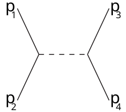
V levem stičišču črt nastane nov virtualen delec. Črtasta črta predstavlja vmesno virtualno stanje in na koncu pri desne stičišču virtualen delec razpade.
t-channel type, kjer je
\[ t = \left( p_3 - p_1 \right) ^2 = \left( p_4 - p_2 \right) ^2 = q ^2 \]
Za t-channel type je največja verjetnosti pri majhnih kotih.
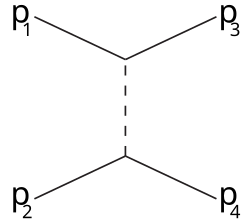
u-channel type, kjer je
\[ u = \left( p_1 - p_4 \right) ^2 = \left( p_2 - p_3 \right) ^2 \]
u-channel tipu se reče tudi crossed t-channel, saj produkti, kakor se vidi na Feynmanovem diagramu zamenjajo mesta.
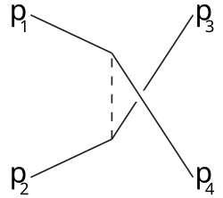
Za Mandelstamove spremenljivke velja enakost
\[ s + t + u = \sum\limits_i^{} m_i ^2 \]
Vir slik in informacij: (??, 2025)
Ponovno obravnavajmo Rutherfordovo sipanje. Matrični element \( \left| T_{fi } \right| \) je funkcija energija vpadnega delca \( E_1 \) ter sipalnega kota \( \theta_3 \). V Lorentz invariantnem faznem prostoru je funkcija \( \left( E_1, \theta_3, \ldots \right) \) v CMS.
Ponovno v CMS sledi
\[ \sqrt{s} = \sqrt{\left( p_1 + p_2 \right) ^2} \]
Multidimenzionalno \( \delta \) funkcijo razpišemo v
\begin{align*} \delta^4 \left( p_1 + p_2 - p_3 - p_4 \right) &= \delta \left( E_1 + E_2 - E_3 - E_4 \right) \delta^3 \left( \vec{p}_1 + \vec{p}_2 - \vec{p}_3 - \vec{p}_4\right) \end{align*}in ker smo v CMS, velja \( \vec{p}_4 = -\vec{p}_3 \).
Integral faznega prostora je enak
\begin{align*} \int\limits_{}^{} \mathrm{d} LIPS &= \int\limits_{}^{} \delta^4 \left( p_1 + p_2 - p_3 - p_4 \right) \frac{\mathrm{d} ^3 p_3}{\left( 2\pi \right) ^3 2 E_3} \frac{\mathrm{d} ^3 p_4}{\left( 2\pi \right) ^3 2 E_4} \left( 2 \pi \right) ^4 \\ &= \mathrm{d} \Omega_3 \int\limits_{}^{} \frac{1}{4 \left( 2 \pi \right) ^2} \delta \left( E_1 + E_2 - E_3 - E_4 \right) \frac{\left| p_3 \right| ^2 \mathrm{d} \left| \vec{p}_3 \right|}{E_3 E_4} \end{align*}V CMS prav tako velja \( \sqrt{s} = \left( E_1 + E_2 \right) \) iz česar potem sledi posodobljen zapis delta funkcije kot
\[ \delta \left( \sqrt{s} - \sqrt{\left| \vec{p}_3 \right| + m_3 ^2} - \sqrt{\left| p_3 \right| ^2 + m_4 ^2} \right) = \delta \left( f (x) \right) \]
Imamo delta funkcijo, ki kot argument sprejme novo funkcijo \( x = \left| \vec{p}_3 \right| \). Kako to obravnavamo, sem opisal višje gor.
Sledi, da je integral faznega prostora enak
\begin{equation} \label{eq:7} \int\limits_{}^{} \mathrm{d} LIPS = \mathrm{d} \Omega_3 \frac{1}{16 \pi ^2} \frac{\left| \vec{p}_3 \right|}{\sqrt{s}}; \ \left| \vec{p}_3 \right| = \frac{s_{34}}{2 \sqrt{s}} \end{equation}Velja pa tudi
\[ \mathrm{d} \sigma = \frac{1}{2 s_{12}} \left| T_{fi} \right| ^2 \mathrm{d} LIPS \]
Ker smo že izračunali vrednosti \( \mathrm{d} LIPS \) \ref{eq:7}, lahko sedaj izrazimo sipalni presek v odvisnosti od prostorskega kota
\[ \frac{\mathrm{d} \sigma}{\mathrm{d} \Omega_3} = \frac{1}{64 \pi ^2 s} \frac{\left| \vec{p}_3 \right|}{\left| \vec{p}_1 \right|} \left| T_{fi} \left( E_1, \theta_3 \right) \right| ^2 \]
Če je sipanje elastično, potem je \( \left| \vec{p}_3 \right| = \left| \vec{p}_1 \right|\), iz česar tako sledi
\[ \frac{\mathrm{d} \sigma}{\mathrm{d} \Omega_{3}} = \frac{1}{64 \pi ^2 s} \left| T_{fi} \right| ^2 \]
Preko t-channel dobimo enačbo
\[ \mathrm{d} t = 2 \left| \vec{p}_1 \right| \left| \vec{p}_3 \right| \mathrm{d} \cos \theta_3 \]
iz česar sledi Lorentz invariantna enakost
\[ \frac{\mathrm{d} \sigma}{\mathrm{d} t} = \frac{1}{16 \pi s_{12} ^2} \left| T_{fi} \left( s, t \right) \right| ^2 \]
Obravnavajmo še razpad \( 1 \to 2 \).
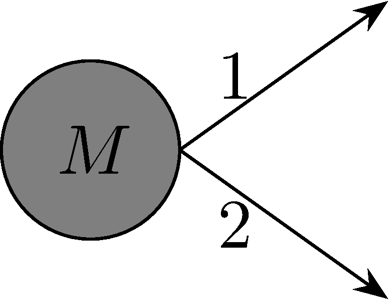
V CMS je četverec gibalne količine enak \( p^{\mu} = \left( M, 0 \right) \), kar pomeni, da je \( E_m = p_0^{\mu} = M \).
Zapišemo
\[ \frac{\mathrm{d} N_f}{V \Delta t} = \frac{1}{2 E_m V} \left| T_{fi} \right| ^2 \left( 2 \pi \right) ^4 \delta^4 \left( p_m - p_1 - p_2 \right) \frac{\mathrm{d} ^3 p_1}{\left( 2\pi \right) ^3 2E_1} \frac{\mathrm{d} ^3 p_2}{\left( 2 \pi \right)^3 2 E_2} \]
kjer smo upoštevali definicijo Lorentz invariantnega prostora za \( n \)-delcev. Število \( N_f \) je število delcev, ki zadane tarčo.
Razpadno širino zapišemo kot
\[ \mathrm{d} \Gamma = \frac{\mathrm{d} N_f}{V \Delta t} \frac{1}{n_t} \]
kjer je \( n_t = \frac{N_t}{V} \) gostota delcev v tarči.
Po podobnem postopku kot v prejšnjem zgledu, kjer integrairamo po faznem prostoru, dobimo najprej
\[ \mathrm{d} \Gamma = \frac{1}{2M} \left| T_{fi} \right| ^2 \mathrm{d} LIPS \]
nato razpadno širino v odvisnost od prostorskega kota za delec 1:
\[ \frac{\mathrm{d} \Gamma}{\mathrm{d} \Omega_{1}} = \frac{1}{32 \pi ^2} \frac{\left| \vec{p}_1 \right|}{M ^2} \left| T_{fi} \right| ^2 \]
Za izotropen razpad, kjer imajo vse smeri merjenja, enako možnost, da bomo kaj izmerili, velja
\[ \left| T_{fi} \right| ^2 = f (M) \]
kjer je \( M \) masa delca.
Razpadna širina je enaka
\[ \Gamma = \int\limits_{}^{} \frac{\mathrm{d} \Gamma}{\mathrm{d} \Omega_{1}} \mathrm{d} \Omega_1 = \frac{\left| \vec{p}_1 \right|}{8 \pi M ^2} \left| T_{fi} \right| ^2 \]
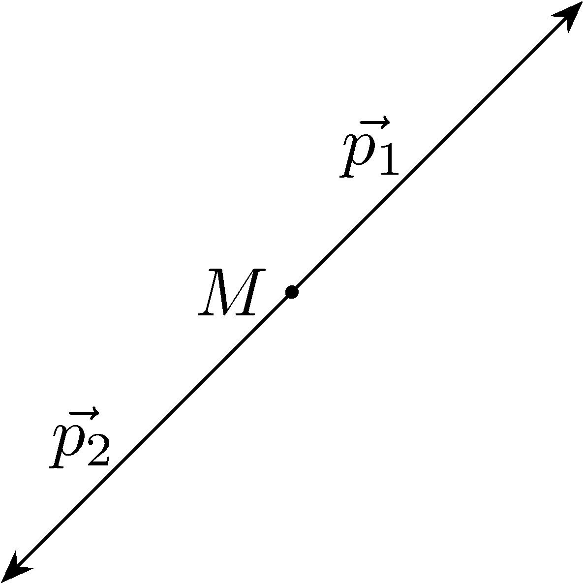
Za razpad \( 1\to 3 \) glej predstavitev Briana Lindquista o Dalitz Plots.
Matrični element \( \left| T_{fi} \right| ^2 \) pri prehodu na več delcev postane vsota
\[ \sum\limits_{}^{} \left| T_{fi} \right| ^2 \]
kjer seštevamo po možnih ohranjenih kvantnih številih (kot so spini, barve, ipd.). Če opazujemo razpad \( 2 \to 2 \), je lahko vsota npr:
\[ \left| S_1 = \frac{1}{2}; S_2 = \frac{1}{2}; S_3 = -\frac{1}{2}; S_4 = - \frac{1}{2} \right| ^2 + \left| S_1 = - \frac{1}{2}; S_2 = \frac{1}{2}; S_3 = \frac{1}{2}; S_4 = - \frac{1}{2} \right| ^2 + \ldots \]
kjer so \( S_i; \ i = 1, 2, 3, 4\) spini.
Ponavadi seštevamo po vseh možnih končnih stanjih in izpovprečimo začetna stanja.
Za spin bi torej uporabili enačbo
\[ \frac{1}{\left( 2S_1 + 1 \right) \left( 2S_2 + 1 \right)} \sum\limits_{S_1^z , S_2^, S_3^z, S_4^z}^{} \left| T \left( S_1, \, S_1^z , \, S_2, \, S_2^z, \ldots \right) \right| ^2 \]
Prost delec ali jedro s spinom lahko predstavimo preko
\[ \left| \vec{p}, s, s_3 \right\rangle \text{ ali } \left| \vec{p}, j, j_3 \right\rangle \]
ali pa z uvedbo sučnosti (ang. helicity),
\[ \left| \vec{p}, s, \lambda \right\rangle \]
kjer je sučnost projekcija spina na smer gibanja
\[ \lambda = \frac{\vec{s} \cdot \vec{p}}{\left| \vec{p} \right|} \]
Uvedemo sučnost, ker ni vedno dobre tretje osi za projekcijo spina oz. vrtilnih količin, hkrati pa je smer gibanja vedno dobra izbira.
K zapisu lahko vključimo tudi tirno vrtilno količino \( l \) in \( l_3 \). Razvoj izgleda kot
\[ \left| \vec{p}, s, s_3 \right\rangle = \sum\limits_{l, l_3}^{}c_{l, l_3} \left| \left| \vec{p} \right|, l, l_3, s, s_3\right\rangle \]
Naš zapis lahko sedaj nadgradimo na dvodelčni sistem \( \left| \vec{p}_1, \lambda_1 \right\rangle \left| \vec{p}_2, \lambda_2 \right\rangle\).
Dvodelčni sistem bi radi zapisali v CMS, torej da velja \( \left| \vec{p} \right| = \left| \vec{p}_1 \right| = \left| \vec{p}_2 \right| \), kar ponovno razvijemo po vrtilnih količinah
\[ \left| \left| \vec{p} \right|, \theta, \phi, \lambda_1, \lambda_2 \right\rangle= \sum\limits_{J, J_3}^{} \sqrt{\frac{2J + 1}{4 \pi}} D_{J_3, \lambda}^J \left( \phi, \theta, - \phi \right) \left| \sqrt{s}, \left| \vec{p}, J, J_3, \lambda_1, \lambda_2 \right| \right\rangle \]
\( D_{J_3\lambda}^J \) so matrike dimenzij \( 2j + 1 \), ki sem jih reče tudi Wigner D-matrix. Vrednosti so tabelirane. Poleg tega je \( \lambda = \lambda_1 - \lambda_2 \) je vsota spinov po osi.
\[ D_{J_3 J_3'}^J \left( \phi, \theta, - \phi \right) = e^{- \mathrm{i} \phi \left( J_3 ' - J_3 \right)} d_{J_3 J_3'}^J (\theta) \]
kjer so \( d_{J_3 J_3'}^J \) ponovno tabelirane in se jim reče Wigner’s (small) d-matrix. Za \( \lambda = 0 \), iz česar sledi \( J_3' = 0 \), in \( J \in \mathbb{Z} \) je to enako sferičnim harmonikom.
Gledamo razpad \( 1 \to 2 \).
Matrični element zapišemo kot
\[ T_{fi} = \left\langle \left| \vec{p} \right| , \theta, \phi, \lambda_1, \lambda_2\middle| T \middle| M, J, J_3\right\rangle \]
Uporabimo prej povedani razvoj za vrtilne količine in vemo, da se \( (J, J_3) \) ohranja. To pomeni, da
\[ T_{fi} = \sqrt{\frac{2J + 1}{4\pi}} D_{J_3 \lambda}^{\ast J} \left( \phi, \theta, -\phi \right) \left\langle J_3, \lambda_1, \lambda_2 \middle| T \middle| J_3 \right\rangle \]
Razpadna širina v odvisnosti od prostorskega kota je tako
\[ \frac{\mathrm{d} \Gamma}{\mathrm{d} \Omega} \sim \sum\limits_{\lambda \lambda_1}^{} \left( d_{J_3 \lambda}^J (\theta) \right) ^2 \left| t_{\lambda_1 \lambda_2} \right| ^2 \]
Vrednost \( d_{J_3 \lambda}^J \) je fiksna ali neodvisna od primera, hkrati pa je \( \left| t_{\lambda_1 \lambda_2} \right| \) neodvisna od kotov.
Poglejmo si še sipanje \( 2 \to 2 \).
Matrični element je
\[ T_{fi} = \left\langle \left| \vec{p}_3 \right|, \theta, \phi, \lambda_3, \lambda_4 \middle| T\middle| \left| \vec{p}_1 \right|, 0, 0, \lambda_1, \lambda_2 \right\rangle \]
Pri začetnih pogojih imamo prosto izbiro kotov, zato sta namesto kotov dve 0. Ponovno razvijemo po vrtilnih količinah in upoštevamo \( \lambda = \lambda_1 + \lambda_2 \) ter \( \mu = \lambda_3 + \lambda_4 \).
\[ \sum\limits_{J, J_3}^{} \frac{2J + 1}{4 \pi} D_{J_3 \lambda}^J D_{J_3 \mu}^J \left\langle \sqrt{s}, \left| \vec{p}_3 \right| \lambda_3, \lambda_4\middle| T \middle| \sqrt{s}, \left| \vec{p}_1 \right|, \lambda_1, \lambda_2 \right\rangle \]
Za \( \theta = \phi = 0 \) bo \( D_{J_3 \lambda}^J \) postal \( \delta_{\theta, \phi} \), iz česar bo sledilo
\[ T_{fi} = \sum\limits_J^{} \frac{2J + 1}{4\pi} d_{\lambda \mu}^J \left( \theta \right) e^{\mathrm{i} \phi \left( \lambda - \mu \right)} t^J_{\lambda_1, \lambda_2, \lambda_3, \lambda_4} \left( \sqrt{s} \right) \]
Za \( J = 0 \) sledi, da je \( d_{\mu \lambda}^J \) konstanta in to pomeni izotropen matrični element \( \left| T_{fi} \right| ^2\), ki mu rečemo tudi “s-wave”.
Za \( J = 1 \), imamo neiztropno \( \left| T_{fi} \right| ^2 \), ki mu rečemo tudi “p-wave”.
Za delec ali jedro zapišemo
\[ P \left| m, J, J_3, \eta \right\rangle = \eta \left| m, J, J_3, \eta \right\rangle \]
kjer je \( P \) parnost.
6. \( \gamma \) sevanje/ prehodi \( \gamma \)
6.1. Recap: sevanje in poli
Nisem imel še EMPja.
Kaj sploh je sevanje? Poznamo besedo, ampak ali jo znamo tudi razložiti? Elektromagnetno valovanje (ang. electromagnetic radiation) ali sevanje je valovanje elektromagnetnega polja, ki nosi energijo tega polja in se širi v prostoru. Zaradi elektrodinamike velja, da naboj, ki se pospešeno giblje, seva.
Da odgovorimo na vprašanje, kako bo nabit delec seval, moramo pobližje pogledati naboj, ki povzroči sevanje.
Za gostoto naboja \( \rho_e \left( \vec{r} \right) \) je električni potencial podan z integralom
\begin{equation} \label{eq:8} V \left( \vec{r} \right) = \frac{1}{4 \pi \epsilon_0} \int\limits_V^{} \frac{\rho_e \left( \vec{r} \right)}{\left| \vec{r} - \vec{r} \,' \right|} \, \mathrm{d} \vec{r} \end{equation}kjer je \( \vec{r} \) oddaljenost od naboja ter \( \vec{r}\, ' \) radij naboja. Ker opazujemo sevanje nabitega delca, pomeni, da bomo oddaljeni od njega. Torej \( \vec{r}\, ' \ll \vec{r} \).
Z \( R = \frac{r'}{r} \) ter \( \epsilon = R ^2 - 2R \cos \theta \), lahko imenovalec
\[ \frac{1}{\left| \vec{r} - \vec{r}\,' \right|} = \frac{1}{r} \frac{1}{\sqrt{1 + \epsilon}} \]
razvijemo v potenčno vrsto \( \sum\limits_{n =0}^{\infty} c_n R^n \), kjer so koeficienti Legendrovi polinomi \( P_L \left( \cos \theta \right) \).
Torej imenovalec zapišemo kot
\[ \frac{1}{r} \frac{1}{\sqrt{1 + \epsilon}} = \frac{1}{r} \sum\limits_{l = 0}^{\infty} \left( \frac{r'}{r} \right)^l P_l \left( \cos \theta \right) \]
kar vstavimo v definicijo potenciala \ref{eq:8}. Posamezne člene zaporedja lahko pointegriramo in pridobimo informacije o tem, kakšne lastnosti imajo posamezni poli. Dobimo, da monopolnemu momentu pada elektično polje z \( \frac{1}{r ^2} \). Dipolnemu momentu pada električno polje z \( \frac{1}{r ^3} \), kvadropolnemu z \( r^{- 4} \), itd.
Naj spomnimo, da magnetno polje ne pozna monopolnega momenta (ni bil (še) odkrit).
6.2. Prehodi \( \gamma \)
Po razpadu \( \alpha \) ali \( \beta \) so nekateri atomi, udeleženi pri razpadu, puščeni v vzbujenem stanju \( X^{\ast} \). Vzbujena stanja preidejo v osnovno stanje \( X \) (ang. ground state) preko razpada \( \gamma \).
\[ ^A_Z X^{\ast} \to ^A_Z X + \gamma \]
Pri atomih so energije \( \gamma \) žarkov ponavadi velikostnega reda \( \mathrm{eV} \) z valovnimi dolžinami velikost \( 10^8 \mathrm{fm} \) oziroma \( 10^2 r_{\text{atom }} \). \( \gamma \) sevanje se pri atomih sprošča pri dipolnih prehodih in razpadna širina \( \Gamma \) je reda velikosti \( 10^9 \frac{1}{s} \).
Pri jedrih atomov pa so energije \( \gamma \) precej večje, tj. \( \mathrm{MeV} \) s pripadajočimi valovnimi dolžinami \( 100 \mathrm{fm} \) ali \( 25 r_{\text{jedra}} \). \( \gamma \) sevanje jedra pa se sprošča tudi pri prehodih višjih redov (multipolnih), ki so posledica gibanja nukleonov v jedru in razpadna širina je tako \( \Gamma \) okoli \( 10^{16} \frac{1}{s} \).
Ločimo dve vrsti prehodov:
- električni (E) ter
- magnetni (M)
Električni prehod in posledično sevanje lahko opišemo kot “nihajoč” naboj, ki povzroča oscilacije v zunanjem električnem polju. Hkrati pa velja tudi obratno, torej, da zunanje električno polje povzroča “nihajoč” naboj. Višji multipolni prehodi bodo imeli karakteristike značilne pripadajoče multipolu.
Pri magnetnem prehod pa imamo “nihanja” magnetnih momentov ali tokov, ki povzročajo oscilacije v zunanjem magnetnem polju in obratno. To povzroča magnetno sevanje.
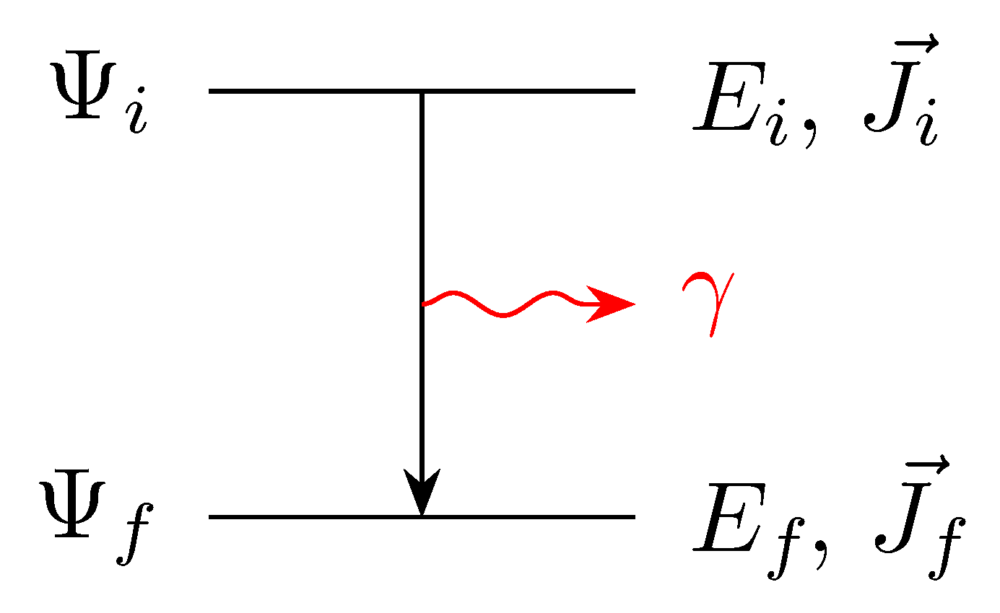
Na dani skici imamo \( \gamma \) sevanje. V primeru, da bi jedro prešlo v ekscitirano stanje, višje energijsko stanje, bi bil foton absorpiran in bi bile puščice obrnjene ravno obratno. Začetno in končno stanje imata svojo vrtilno količino \( \vec{J} \).
6.2.1. Ohranjene količine
Pomembno si je zapomniti, da se pri elektromagnetni interakciji ohranjata tako vrtilna količina kot parnost. Sevanje odnese foton z vrtilno količino \( \vec{l} \).
Torej bo veljalo
\[ \vec{J}_i = \vec{l} \oplus \vec{J}_f \]
kjer sta \( \vec{J}_i \) začetna in \( \vec{J}_f \) končna vrtilna količina, kjer je \( \oplus \) Direct sum.
Zaradi trikotniškega pravila bo veljajo
\[ \left| J_i - J_f \right| \le l \le \left| J_i + J_f \right| \]
Za foton velja \( J^P = 1^- \) zaradi česar je \( l_{min } \ge 1 \). Prehodi \( 0 \to 0 \) oz. \( J_{i, f} = 0 \) niso dovoljeni, razen kot višji popravki - npr. pri notranjih konverziji izgleti več \( e^- \).
Za take manj verjetne razpade je razpadni čas višji.
Hamiltonianu dodamo (magnetni) vektorski potencial
\[ H = \frac{\left( \vec{p} - e \vec{A} \right)^2}{2m} + e V \]
Schrödingerjeva enačba je tako
\[ \frac{\partial \Psi}{\partial t} = \frac{1}{2m} \left( \vec{p} - e \vec{A} \right) ^2 \Psi + e V \Psi \]
Operator gibalne količine \( \hat{p} \) lahko aproksimiramo z \( \vec{\nabla} \).
Za olajšavo reševanja problema, uporabimo Coulumbsko umeritev (ang. Coulumb gauge) \( \vec{\nabla} \cdot \vec{A} = 0 \).
Električno in magnetno polje sta ustvarjena, če je zadoščeno pogojema
\begin{align*} \vec{E} &= - \vec{\nabla} U - \frac{\partial A}{\partial t}\\ \vec{B} &= \vec{\nabla} \times \vec{A} \end{align*}Za dano električno in magnetno polje potenciali niso unikatni. Tako lahko množico potencialov, ki zadoščajo tem pogojem, zmanjšamo z uvedbo Coulumbske umeritve, ki zahtevajo, da so potenciali brez divergenc.
Nastavimo potencial kot vsoto motenj \( \phi \) ter statičnega potenciala \( V_0 \)
\[ V = \phi + V_0 \left( \vec{r} \right) \]
Razpišemo Hamiltonian in ga lahko razdelimo na dva dela - statičen del in del zunaje motnje.
\[ H = \frac{\vec{p}\, ^2}{2m} + eV_0 + \frac{1}{2m} \left( - 2e \vec{A} \cdot \vec{p} + e ^2 A ^2 \right) + e \phi \]
kjer so členi od drugega naprej del zunanje motnje.
Zaradi Coulumbske umeritve lahko prav tako zapišemo \( \vec{A} \vec{p} = \vec{p} \vec{A} \)
Zanima nas interakcija sistema (atom, jedra, itd. ) z EM sevanjem.
Elektromagnetno sevanje uvedemo kot linearno poliraziran ravni val (monokromatski). Ta opis je opis klasične oz. nekvantiziranega elektromagnetnega polja.
Namesto kompleksnega zapisa ravnega vala
\[ \vec{E} \left( \vec{r}, t \right) = \vec{E}_0 e^{\mathrm{i} \left( \vec{k} \vec{r} - \omega t \right)} \]
bomo uporabili realni zapis ravnega vala
\begin{equation} \label{eq:9} \vec{A} = A_0 \vec{\epsilon} \cos \left( \vec{k} \vec{r} - \omega t \right) \end{equation}kjer je \( A_0 \) amplituda in \( \left| \vec{\epsilon} \right| = 1 \) polarizacijski vektor.
Pri klasični mehaniki smo se lahko poslužili trika, da smo naš problem prenesli iz realnega prostora v kompleksni prostor, rešili za realno in imaginarno os posebej in iz tega potem ekstrahirali rešitve nazaj v realni prostor. Pri kvantni mehaniki, tudi pri klasični sliki, pa je tako, da se tega zveznega prehoda ne moremo poslužiti. Če začnemu reševati v kompleksnem prostoru, bomo dobili rezultate v njem. Če pa začnemo v realnem prostoru, kakor v \ref{eq:9}, pa dobimo rezultate v realnem prostoru.
Zapišemo pogoja za električno in magnetno polje.
\begin{align*} \vec{E} &= - \frac{\partial A}{\partial t} = \underbrace{E_0}_{A_0 \omega} \sin \left( \vec{k} \vec{r} - \omega t \right) \\ \vec{B} &= \frac{E_0}{c_0} \end{align*}Zapišemo Hamiltonian s pomočjo teorije motenj
\[ \hat{H} = \hat{H}_0 + \hat{H}_{int } \]
kjer je \( \hat{H}_0 \) statičen del definiran v zgornjem primeru kot
\[ \hat{H}_0 = \frac{p ^2}{2m} + e V_0 \]
ter je \( \hat{H}_{int } \) motnja
\[ \hat{H}_{int } = - \frac{e \vec{p} \vec{A}}{m} + \frac{e ^2 A ^2}{2m} + e \phi \]
kjer indeks \( int \) označuje interakcijo. Člen \( e\phi \) lahko zanemarimo, ker je zanemarljiv v primerjavi z \( \vec{A} \), člen z \( A ^2 \) pa zanemarimo, saj je motnja.
Zanima nas matrični element
\[ \left\langle f \middle| H_{int } \middle| i \right\rangle \]
Z upoštevanjem kompleksnega zapisa kosinusa zapišemo
\begin{align*} H_{int } &= \left[ \exp \left( \mathrm{i} \left( \vec{k} \vec{r} - \omega t \right) \right) + \exp \left( - \mathrm{i} \left( \vec{k} \vec{r} - \omega t \right) \right) \right] \left( - \frac{e A_0 \vec{\epsilon} \vec{p}}{2m} \right)\\ &= e^{\mathrm{i} \omega t} \hat{V} + e^{\mathrm{i} \omega t} \hat{V}^{\dagger} \end{align*}Takšen je standardni formalizem harmonskega perturbatorja, kjer sta
\begin{align*} \hat{V} &= - \frac{e A_0 e^{-\mathrm{i} \vec{k} \vec{r}} \vec{\epsilon} \vec{p}}{2m} \\ \hat{V}^{\dagger} &= - \frac{eA_0 e^{\mathrm{i} \vec{k} \vec{r}} \vec{\epsilon} \vec{p}}{2m} \end{align*}Ponovno uporabimo enačbo \ref{eq:10} iz teorije motenj, kjer definiramo \( \omega_{fi } = E_f - E_i \)
\begin{align*} \mathrm{i} a_f \left( t \right) &= \int\limits_0^t \left\langle f \middle| H_{int } \middle| i\right\rangle e^{\mathrm{i} \omega_{fi } \tau} \, \mathrm{d} \tau \\ &= \int\limits_0^t \left[ V_{fi} e^{\mathrm{i} \omega \tau} + V^{\dagger}_{fi } e^{- \mathrm{i} \omega \tau} \right] e^{\mathrm{i} \omega_{fi}\tau } \, \mathrm{d} \tau \end{align*}kjer imamo matrična elementa prehoda
\begin{align*} V_{fi} &= \left\langle f \middle| \hat{V} \middle| i\right\rangle\\ V^{\dagger}_{fi} &= \left\langle f \middle| \hat{V}^{\dagger} \middle| i \right\rangle = \left\langle i \middle| \hat{V} \middle| f \right\rangle^{\ast} \end{align*}Za lažje (težje) življenje uvedemo oznako
\[ \mathrm{sinc} z = \frac{\sin z}{ z} \]
in po integriranju dobimo enačbo z dvema deloma.
\begin{align*} a_f (t) = - \mathrm{i} t & \left[ V_{fi} \left( \exp \left\{ \mathrm{i} \frac{(\omega + \omega_{fi }) t}{2} \right\} \mathrm{sinc} \left\{ \frac{(\omega + \omega_{fi }t )}{2} \right\} \right) \right. \\ &+ \left. V_{fi} ^{\dagger} \left( \exp \left\{ \mathrm{i} \frac{(\omega - \omega_{fi}) t}{2} \right\} \mathrm{sinc} \left\{ \frac{(\omega - \omega_{fi} )t}{2} \right\}\right) \right] \end{align*}Prvi del je tisti, ki ima matrični element \( V_{fi } \). Ta del ima vrh pri \( \omega = - \omega_{fi} \). Z upoštevanjem definicije \( \omega_{fi} \) ter energije fotona \( E_{\gamma} = \hbar \omega \), velja
\[ E_f = E_i - \hbar \omega \]
in predstavlja sevanje \( \gamma \).
Drugi del ima matrični element \( V_{fi}^{\dagger} \), ki ima vrh pri \( \omega = \omega_{fi} \), iz česar dobimo
\[ E_f = E_i + \hbar \gamma \]
kar predstavlja absorpcijo fotona \( \gamma \).
V primeru, da ne vemo ničesar o eksperimentu, sta prisotna oba procesa.
Za lažjo obravnavo bomo izbrali samo enega od delov, in to je sevanje. Za izpeljavo drugega je proces analogen.
Sevalni del je torej
\[ \left| a_f (t) \right| ^2 = t ^2 \frac{e ^2 \left| A_0 \right| ^2}{4 m ^2} \left| \left\langle f \middle| e^{- \mathrm{i} \vec{k} \vec{r}} \vec{\epsilon} \vec{p} \middle| i \right\rangle \right|^2 \mathrm{sinc} ^2 \left[ \frac{(\omega + \omega_{fi}) t }{2} \right] \]
Ob upoštevanju definicija verjetnosti, da se proces zgodi
\[ P_{i \to f}^{\mathrm{rad}} (t) = \int\limits_{}^{} \left| a_f (t) \right| ^2 \rho (\omega) \, \mathrm{d} \omega \]
kjer \( \mathrm{rad} \) označuje radiaton oz. izsevanje. Nadalje dobimo
\[ P_{i \to f} ^{\mathrm{rad}} (t) = \int\limits_{}^{} \frac{e ^2 t ^2}{m ^2} \frac{w_e}{2 \epsilon_0 \omega ^2} \left| \left\langle f \middle| e^{- \mathrm{i} \vec{k} \vec{r}} \vec{\epsilon} \vec{p} \middle| i \right\rangle \right| ^2 \mathrm{sinc} ^2 \left[ \frac{(\omega + \omega_{fi} )t}{2} \right] \rho(\omega) \, \mathrm{d} \omega \]
Gostota električnega valovanja \( w_e \) je enaka
\[ w_e = \frac{1}{2} \epsilon_0 E ^2 = \frac{1}{2} \epsilon_0 \omega ^2 \left| A_0 \right| ^2 \]
kar smo upoštevali pri izpelji zgornje enačbe.
Integriranje funkcije \( \mathrm{sinc} \) lahko nadomestimo z integracijo \( \delta \) funkcije:
\[ \int\limits_{}^{} \mathrm{sinc} ^2 \left[ \alpha z \right] \, \mathrm{d} z = \int\limits_{}^{} \frac{\pi}{\alpha} \delta (z) \, \mathrm{d} z \]
kjer velja \( \frac{1}{\alpha} = \frac{2}{t} \) ter \( z = \omega + \omega_{fi} \). Ker obravnavamo sevanje je vrh delta funkcije pri \( \omega = - \omega_{fi} = \omega_{\gamma} \).
Tako dobimo verjetnost za prehod
\[ P_{i \to f}^{\mathrm{rad}} (t) = \frac{2 \pi}{t} \frac{e ^2 t ^2}{m ^2} \frac{w_e \rho(\omega_{\gamma})}{2 \epsilon_0 \omega_{\gamma} ^2} \left| \left\langle f \middle| e^{- \mathrm{i} \vec{k} \vec{r}} \vec{\epsilon} \vec{p} \middle| i \right\rangle \right| ^2 \]
Produkt gostote električnega valovanje \( w_e \) ter gostote stanje \( \rho(\omega) \) je \( \rho_e \) gostota energije končnih stanje, ki je definirana kot
\[ \rho_e = \frac{\hbar \omega ^3}{\pi ^2 c_0 ^3} \frac{1}{\exp \left( \frac{\hbar \omega}{k_B T} \right) - 1} \]
Prvi ulomek je gostota energije, drugi ulomek pa predstavlja zasedbeno število. To smo lahko naredili, saj je končno stanje fazni prostor sevanja (spekter črnega telesa), ki vsebuje fotone.
Razpadna širina je
\[ \Gamma^{\mathrm{rad}} = \frac{1}{\tau_{\mathrm{rad}}} = \frac{P_{i \to f}^{\mathrm{rad}}}{t} \]
iz koder dobimo splošen izraz za sevanje
\[ \Gamma^{\mathrm{rad}} = \frac{e ^2 \omega_{\gamma}}{\pi \epsilon_0 m ^2} \left| \left\langle f \middle| e^{- \mathrm{i} \vec{k} \vec{r}} \vec{\epsilon} \vec{p} \middle| i \right\rangle \right| ^2 \]
Eksponent v matričnem elementu razvijemo, s čimer pridobimo multipolni razvoj
\[ e^{-\mathrm{i} \vec{k} \vec{r}} = 1 - \mathrm{i} \vec{k} \vec{r} - \frac{1}{2} \left( \vec{k} \vec{r} \right) ^2 - \ldots + \frac{\left( - \mathrm{i} \vec{k} \vec{r} \right)^n}{n!}; \quad \left| \vec{k} \right| = \frac{\omega_{\gamma}}{c_0} \]
Vrtilna količina vsakega člena razvoja je \( l = n + 1 \). Prvi člen z \( l = 1 \) označuje dipol, ki ga označimo z \( E1 \). Drugi člen z \( l = 2 \) označuje kvadropol \( E2 \), tretji z \( l = 3 \) označuje oktapol \( E3 \), itd.
Izračunajmo prispevek dipola.
Za matrični element velja
\[ \left\langle f \middle| \vec{\epsilon} \vec{p} \middle| i \right\rangle = \vec{\epsilon} \left\langle f \middle| \vec{p} \middle| i \right\rangle \]
K reševanju bomo pristopili z opominom, da je \( \hbar = 1 \) ter
\[ \left[ \vec{r}, H_0 \right] = \frac{\mathrm{i} \vec{p}}{ m } \]
iz česar sledi
\begin{align*} \left\langle f \middle| \vec{p} \middle| i \right\rangle &= - \mathrm{i} m \left\langle f \middle| \left[ \vec{r}, H_0 \right]\middle| i \right\rangle \\ &= \left\langle f \middle| \vec{r} H_0 \middle| i \right\rangle - \left\langle f \middle| H_0 \vec{r} \middle| i \right\rangle && H_0 \left| i \right\rangle = E_i \left| i \right\rangle \\ &= \left\langle f \middle| \vec{r} \middle| i \right\rangle \left[ E_i - E_f \right] \end{align*}Razlika energij \( E_i - E_f \) je enaka \( \omega_{\gamma} \), ker je \( \frac{1}{\hbar} = 1\). Tako dobimo
\[ \left\langle f \middle| \vec{p} \middle| i \right\rangle = - \mathrm{i} m \omega_{\gamma} \left\langle f \middle| \vec{r} \middle| i \right\rangle \]
Pomnoženo z nabojem, dobimo operator dipolnega momenta \( \hat{p}_e = e \hat{r} \). Razpadna širina dipolnega momenta je enaka
\[ \frac{1}{\tau^{\mathrm{rad}}_{DIP}} = \frac{\omega_{\gamma} ^3}{\pi \epsilon_0} \left| \vec{\epsilon} \left\langle f \middle| \hat{p}_e \middle| i \right\rangle \right| ^2 \]
Spovprečimo polarizacijo \( \vec{\epsilon} \), da je nepolarizirano oz. nekoherentno EM valovanje. Valovni vektor je tako enak \( \vec{k} = \left( 0, 0, k \right) \), dipolni moment \( \vec{p}_e = \left( p_e \sin \theta, 0, p_e \cos \theta \right) \) ter polarizacija \( \vec{\epsilon} = \left( \cos \phi, \sin \phi, 0 \right) \).
Kvadrat absolutne vrednosti produkta polarizacije \( \vec{\epsilon} \) ter dipolnega momenta \( \vec{p}_e \) je enak
\[ \left| \vec{\epsilon} \vec{p}_e \right| ^2 = p_e ^2 \sin ^2 \theta \cos ^2 \phi \]
kar izpovprečimo preko integrala in dobimo
\[ \frac{p_e ^2}{3}, \quad p_e ^2 = \left| \left\langle f \middle| ex \middle| i \right\rangle \right| ^2 + \left| \left\langle f \middle| ey \middle| i \right\rangle \right| ^2 + \left| \left\langle f \middle| ez \middle| i \right\rangle \right|^2 \]
Iz česar sledi razpadna širina
\[ \frac{1}{\tau^{\mathrm{rad}}_{DIP}} = \frac{\omega_{\gamma} ^3}{3 \pi \epsilon_0} \left| \left\langle f \middle| \vec{p}_e \middle| i \right\rangle \right| ^2 \]
Poglejmo si še magnetno dipolno sevanje.
Naš račun iz teorije motenj ni upošteval magnetnega dela sistema, saj v Hamiltonianu manjka člen
\[ \delta H = H_m = - p_m \vec{B} = - \vec{\mu} \vec{B} \]
Za elektron v atomu velja
\[ \vec{\mu} = g_e \frac{e}{m_e} \frac{1}{2} \vec{\sigma} \]
kjer člen \( \frac{1}{2} \vec{\sigma} \) predstavlja spin.
Upoštevamo pogoj za magnetno polje
\[ \vec{B} = \vec{\nabla} \times \vec{A} = \frac{2 A_0 \omega}{c_0} \vec{b} \sin \left( \vec{k} \vec{r} - \omega t \right) \]
kjer je \( \vec{b} \) definiran kot
\[ \vec{b} = \frac{\vec{k}}{k} \times \vec{\epsilon} = \left( \epsilon_2, - \epsilon_1, 0 \right) \]
Interakcijski člen \( H_{int } \) je tako enak
\[ \hat{H}_m = e^{\mathrm{i} \omega t} \hat{V}_m + e^{- \mathrm{i} \omega t} \hat{V}_m ^{\dagger} \]
kjer je
\[ V = - \frac{\mathrm{i} \omega A}{c_0} e^{\mathrm{i} \vec{k} \vec{r}} \left( \vec{b} \vec{\mu} \right) \]
Podobno kot pri električnem dipolnem momentu, velja
\[ \left\langle f \middle| \vec{b} \vec{\mu} \middle| i\right\rangle = \vec{b} \left\langle f \middle| \hat{\vec{\mu}} \middle| i \right\rangle \]
kjer je
\[ \hat{\vec{\mu}} = \frac{e}{2m} \left[ g_e \hat{\vec{L}} + g_s \hat{\vec{S}} \right] \]
S povprečenjem po \( \vec{b} \) oziroma po \( \vec{\epsilon} \) dobimo ponovno \( \frac{1}{3} \), kar pomeni, da je razpadna širina magnetnega dipolnega momenta enaka
\[ \frac{1}{\tau^{(m)}_{DIP}} = \frac{\omega_{\gamma} ^3}{3 \pi \epsilon_0} \left| \left\langle f \middle| \vec{\mu} \middle| i \right\rangle \right| ^2 \]
Ocenimo velikosti dipolnih momentov. Za električni dipolni moment \( E1 \) in vzročno \( l = 1 \) je
\[ \Gamma_{E1} = \frac{\omega_{\gamma} ^3}{3 \pi \epsilon_0} \left| \left\langle f \middle| e\vec{r} \middle| i \right\rangle \right| ^2 \propto \left| e R \right| ^2 \]
kjer je \( R \) radij jedra. Z upoštevanjem sklopitve šibke strukture \( \alpha = \frac{e ^2}{4 \pi \epsilon_0 \hbar c_0} = \frac{1}{137} \) in \( E_{\gamma} \approx 1 \mathrm{MeV} \) dobimo
\[ \Gamma_{E1} = \frac{4}{3} \alpha E_{\gamma} ^3 R ^2 \approx 0.24 \frac{\mathrm{MeV} ^3}{\mathrm{fm} ^2} = 10^{16} \mathrm{s}^{-1} \]
Za magnetni dipolni moment \( M1 \) in vzročno \( l = 1 \) pa ne vemo, kako bi aproksimirali matrični element.
Jedro ima jedrski magneton definirano kot
\[ \mu_m = \frac{e \hbar}{2 m_p} \]
kjer lahko ocenimo \( \frac{\hbar}{m_p} \approx 0.2 \mathrm{fm} \), kar je ekvivalentno \( \frac{R}{25} \), za radij \( R = 5 \mathrm{fm} \).
Razmerje razpadnih širin je tako
\begin{align*} \frac{\Gamma_{M1}}{\Gamma_{E1}} &= \frac{\mu_m ^2}{\left( e R \right)^2} \\ &= \frac{\left( e \hbar \right)^2}{4 m_p ^2 e ^2 R ^2} \\ &= \frac{\hbar ^2}{4 m_p ^2 R ^2} \\ &= \frac{R ^2}{4 \left( 25 \right) ^2 R ^2} \approx 10^{-3} \end{align*}6.2.2. Izbirna pravila
Ohranjajo se kvantna števila, vrtilna količina ter parnost, saj so matrični elementi invariantni na parnost.
Pri elektromagnetnih interakcija ima operator parnosti sledeč učinek
\begin{align*} \hat{\vec{p}}_e &\overset{\hat{P}}{\longrightarrow} - \hat{\vec{p}}_e \\ \hat{\vec{\mu}} & \overset{\hat{P}}{\longrightarrow} \hat{\vec{\mu}} \end{align*}Ker je \( \vec{p} \) odvisen od \( \vec{r} \), imata končno in začetno stanje nasprotno parnost za električni dipolnih prehod.
\[ \hat{P} \left| J, J_3, \eta \right\rangle = \eta \left| J, J_3, \eta \right\rangle \]
kjer je \( \eta \) intrinsic parity. Za matrični element pri elektromagnetni interakciji velja
\[ \left[ \hat{P}, \hat{S} \right] = 0 \] iz tega sledi
\[ S P = PS \]
oziroma
\[ S = PSP^{-1} \]
Za s-matrix velja
\[ S_{fi} = \left\langle f \middle| S \middle| i \right\rangle = \int\limits_{}^{} \Psi^{\ast} \hat{S} \Psi_i \, \mathrm{d} ^3 \vec{r} \] iz česar sledi, da je produkt integranda sod in za parnost tako velja
\[ P_f = P_i \cdot P_{int } \]
Pri magnetnem prehodu M1 je podoben postopek, kjer uporabimo klasično analogijo
\[ \vec{\mu} = g\vec{\jmath} \approx \vec{r} \times \vec{p} \]
iz česar sledi soda parnost.
- Posplošitev na višje rede
Eksponent smo razvili na pole ter naša perturbacija ima dva člena
\[ H_{int } = H_e + H_m \]
Iz tega sledi matrični element
\begin{align*} V_{fi} &= \left\langle f \middle| H_{int } \middle| i \right\rangle \\ &= \int\limits_{}^{} \Psi^{\ast}_f \left[ \sum\limits_l^{} \hat{o}_l^e + \hat{o}_l ^m \right] \Psi_i \, \mathrm{d} ^3 \vec{r} \end{align*}kjer je \( l \) red multipola in je \( l = 1 \) dipol.
Električni prehodi E imajo parnost \( \left( -1 \right)^l \), magnetni prehodi imajo pa parnosti \( \left( -1 \right)^{l + 1} \). Za ohranitev vrtilne količine velja
\[ \left| j - j' \right| \le l \le \left| j + j' \right| \]
V naravi so razpadi pri najnižjem možnem \( l \), ker imajo najkrajši čas.
Za
\[ \Delta j = j - j' = 2 \]
sledi, da imamo \( E2 \) prehod.
Prehodi \( j = j' = 0 \) so prepovedani.
[Vstavi tabelo]
Elektromagnetna interakcija in parnost v \( 2 \to 2 \). Obravnavamo primer
\[ e^+ e^- \to \mu^+ \mu^- \]
[skica sipanja]
Uvedemo sučnost (ang. helicity), da razločimo med delcem in antidelcem.
Sučnost je definirana kot
\[ \lambda = h = \frac{s \times p}{\left| s \times p \right|} \]
kjer je \( s \) spin in \( p \) gibalna količina. Delci imajo spin v nasprotni smeri gibalne količine in imajo zato sučnost \( -1 \), hkrati pa imajo antidelci spin v isti smeri kot gibalna količina in imajo zato sučnost \( +1 \).
Precesija spina \( s \) okrog gibalne količine \( p \) za delec ima pot, ki bi jo naredil levo sučni vijak, zato mu rečemo angleško left-handed. Označimo ga z \( L \) in pomeni \( \lambda = - \frac{1}{2} \). Precesija spina antidelca okrog gibalne količina pa ima pot desno sučnega vijaka in ima angleški izrak right-handed. Označimo ga z \( R \) in je enak \( \lambda = \frac{1}{2} \).
glej naslednje podpoglavjeZa začetno stanje je sučnost enaka
\[ \lambda = \lambda_1 - \lambda_2 = - 1 \]
in za končno stanje je sučnost enaka
\[ \mu = \lambda_3 - \lambda_4 = -1 \]
Spomnimo se iz primera sipanja \( 2 \to 2 \), je matrični element enak
\[ T_{\lambda_1, \lambda_2, \lambda_3, \lambda_4} = \sum\limits_J^{} \frac{2J + 1}{4 \pi} d_{\lambda \mu} ^J \left( \theta \right) e^{\mathrm{i} \phi (\lambda - \mu)} T_{\lambda_1, \lambda_2, \lambda_3, \lambda_4} ' \left( \sqrt{s} \right) \]
kjer pri \( T' \) upoštevamo možna izbirna pravila.
Če se parnost ohranja, torej \( \lambda_i \overset{\hat{P}}{\longrightarrow} - \lambda_{i} \), potem velja
\[ T_{-\lambda_1, -\lambda_2, -\lambda_3, -\lambda_4} \left( \theta, \phi, \sqrt{s} \right) = \eta_g T_{\lambda_1, \lambda_2, \lambda_3, \lambda_4} \left( \theta, \pi - \phi, \sqrt{s} \right) \]
kjer je
\[ \eta_g = \eta_1 \eta_2 \eta_3 \eta_4 \left( -1 \right)^{(j_1 + j_2 - j_3 - j_4)} \]
Primeri dovoljenih prehodov so
\begin{align*} 1: \quad e_L^- e_R^+ &\to \mu_L ^- \mu_R^+ \\ 2: \quad e_R^- e_L^+ & \to \mu_R^- \mu_L^+ \\ 3: \quad e_L^- e^+_R &\to \mu_R^- \mu_L^+ \\ 4: \quad e_R^- e_L^+ &\to \mu_L^- \mu_R^+ \\ \end{align*}V tej elektromagnetni interakciji sta \( \lambda = 0 \) in \( \mu = 0 \) prepovedana. Za ohranitev parnosti pri Wigner small d-matrix velja
\[ d_{-\lambda -\mu}^J = d_{\lambda \mu}^J \]
Za kotno odvisnost velja tudi
\[ d_{\lambda \mu}^J = d_{\pm 1, \pm 1}^1 \]
in za naše primere je tako
\begin{align*} 1: \quad (1 + \cos \theta) &= d_{11}^1 \\ 2: \quad (1 + \cos \theta) &= d_{-1 -1}^1 \\ 3: \quad (1 - \cos \theta) &= d_{-1 1}^1 \\ 4: \quad (1 - \cos \theta) &= d_{1 -1}^1 \end{align*}Primera 1 in 2 upoštevata ohranitev parnosti.
\begin{align*} \overline{\left| T_{fi} \right| ^2} &= \overline{\sum\limits_{}^{}} \left| T_{fi} (\lambda_j) \right| ^2 \\ &= \frac{1}{4} \left| f \left( \sqrt{s} \right) \right| ^2 \left[ 2 \left( 1 - \cos \theta \right) ^2 + 2 \left( 1 + \cos \theta \right) ^2 \right] \\ &= \left| f \left( \sqrt{s} \right) \right| ^2 \left( 1 \cos ^2 \theta \right) \end{align*}kjer smo \( \frac{1}{4} \) dobili iz produkta
\[ \frac{1}{2s_1 + 1} \cdot \frac{1}{2s_2 + 1} \]
in je končen rezultat simetričen za \( \theta \) in \( -\theta \) (zaradi kosinusa).
V šibki interakciji (\( \beta \) razpadi) so dovoljeni le nekateri prehodi, verjetnosti so drugačne in pa krši parnost.
- Dobre baze v Hilbertovem prostoru
Za prosti delec s Hamiltonianom \( \hat{H} = \frac{p ^2}{2m} \) je \( \left| \Psi \right\rangle \) oziroma ravni val dobra baza. Označimo jo kot
\[ \left| \vec{p}, s, \lambda \right\rangle = e^{- \mathrm{i} \vec{p} \vec{r}} \left| s, \lambda \right\rangle \]
Pri interakciji dveh delceh (ali več) pa je Hamiltonian enak \( \hat{H} = \hat{H}_0 + \hat{H}_{int } \). Včasih, odvisno od problema, je potrebno izbrati novo bazo z ustreznimi kvantnimi števili. Novo bazo nato pretvorimo nazav v ravne valove.
Kot bazo lahko izberemo tudi masna stanja. Spomnimo, velja \( E ^2 - p ^2 = m ^2 \), kar našo bazo pretvori v
\[ \left| \vec{p}, s, \lambda \right\rangle \to \left| m, s, \lambda \right\rangle \]
Kot primer masne baze si lahko pogledamo elektronski in mionski nevtrino
\[ \left| \nu_e + \nu_{\mu} \right\rangle = a (t) \left| \nu_e \right\rangle + b (t) \left| \nu_{\mu} \right\rangle \]
Za enaki gibalni količini in enaki masi, bo meritev pokazala, da je delec nekaj časa v enem in nekaj časa v drugem stanju baze.
7. Razpadi \( \beta \)
Ločimo dve vrsti \( \beta \) razpadov:
\( \beta^- \) razpad, kjer sta produkt elektron in elektronski antinevtrino
\[ ^A_Z X \to ^A_{Z+1} Y + e^- + \bar{\nu}_e; \quad n^0 \to p^+ e^- \bar{\nu}_e \]
Razpad \( \beta^- \) je vedno dovoljen, saj je razlika mas nevtrona in protona enaka
\[ m_n - m_p = 1.29 \mathrm{MeV} \]
Prost nevtron \( n^0 \) je nestabilen in ima razpadni čas \( \tau = 880 \mathrm{s} \).
\( \beta^+ \) razpad, kjer nastaneta pozitron in elektronski nevtrino
\[ ^A_Z \to ^A_{Z - 1}Y + e^+ + \nu_e; \quad p^+ \to n^0 e^+ \nu_e \]
Razpad je možen samo v jedru, saj potrebuje dodatno energijo, da prehod poteče. Proton, za razliko od nevtrona ni stabilen. Eksperimenti so pokazali, da je razpadni čas protona \( \tau_p \) večji od \( 10^{36} \mathrm{s} \).
Detektor nevtrinov Super-Kamiokande na japonskem je opazil dopuščen prehod \( p^+ \to \pi^0 e^+ \). \( \pi^0 \) nadaljno razpade na dva fotona. Razpad protona \( p^+ \) so merili preko sevanja Čerenkova pozitronov \( e^+ \).
Katerikoli \( \beta \) razpad je, je ključna stvar to, da se število \( A \) ohranja, spremenita pa se ali število protonov ali pa število nevtronov.
Razpadi \( \beta \) razpadejo preko šibke interakcije in so vezani na šibke bozone. To so \( W^{\pm} \) z maso \( m_W = 80.35 \mathrm{GeV} \) in spinom \( s_W = 1 \). Nevtron je sestavljen iz dveh kvarkov \( d \) in enega kvarka \( u \). Pri razpadu \( \beta \) se eden od kvarkov \( d \) spremeni v kvark \( u \). Pri spremembi nastane virtualen delec \( W \) - torej si sposodi energijo, da nastane. Šibka interakcija funkcionira kot sila kratkega dosega, zato se razpad zgodi zelo hitro.
Potencial šibke sile je enak
\[ U_W = U_0 \frac{e^{- \frac{r}{R}}}{\frac{r}{R}}= \frac{g_w ^2}{r} e^{- \frac{r}{R}} \]
kjer je \( R + \frac{\lambda_c}{2 \pi} \approx \frac{1}{M_W = 2.5 \cdot 10^{ -3}} \mathrm{fm} \).
Če izračunamo energijsko bilanco in pri opazovanih eksperimentih, se pokaže, da ima razpad karakteristiko razpada 3 delcev, kjer je 3. delec brezmasni in odnese preostanek energije. Ta delec je nevtrino (ali antinevtrino) ter ima mirovno maso \( m_{\nu_e} = 0 \) ter spin \( s_{\nu_e} = \frac{1}{2} \).
Za razliko od razpada \( \alpha \), ki ga bomo obravnavali kasneje, je potrebno v zakup vzeti določene posebnosti, ki nas vodijo do različnega načina izračuna verjetnosti za razpad \( \beta \). Ti razlogi so
- elektron in nevtrino pred razpadom ne obstajata in je njuno ustvarjenje potrebno vzeti v zakup
- elektron in nevtrino morata biti obravnavana relativistično
- izračuni nam morajo podati zvezno distribucijo energij elektronov.
7.1. Fermijev model šibkih interakcij
[točen Feynmanov diagram]
[točkovni Feynmanov diagram]
Šibka interakcija je zaradi masivnega delca kot nosilec sila kratkega dosega, zato se jo lahko aproksimira s približkom točkaste interakcije v limiti nizkih energij. S Fermijevo konstanto \( G_F \) definiramo matrični element
\[ V_{fi} = G_F \int\limits_{}^{} \Psi^{\ast}_f \underbrace{\phi^{\ast}_e \phi^{\ast}_{\nu}}_{\phi^{\ast}_W} \Psi_i \, \mathrm{d} ^3\vec{r} = \left\langle \Psi_f \phi_e \phi_{\nu} \middle| H_{int } \middle| \Psi_i \right\rangle \]
kjer sta \( \phi_e \) in \( \phi_{\nu} \) valovni funkciji pripadajočih delcev. Fermijeva konstanta določi moč interakcije oziroma sklopitve.
Kot primer si lahko pogledamo:
- elektromagnetna interakcija ima sklopitev \( \alpha_{EM}= \frac{1}{137} \)
- močna interakcija ima sklopitev \( \alpha_s = 1 \)
- šibka interakcija ima sklopitev \( \alpha_W = \frac{g_W ^2}{4 \pi} = \frac{1}{30} \), kjer je \( g_W \approx 0.65 \)
Preko
\[ \frac{G_F}{\sqrt{2}} = \frac{g_W ^2}{8 m_W ^2} \approx \frac{\alpha_W}{m_W ^2} \approx 1.1666 \cdot 10^{-5} \mathrm{GeV} ^{-2} \]
Omenjen je Breit-Wigner, ne vem zakaj.
7.2. Verjetnost za razpad \( \beta \)
Razpadna širina je enaka
\[ \Gamma = \frac{1}{\tau} = \lambda = 2 \pi \left| V_{fi} \right| ^2 \gamma_f (E) \]
kjer smo v prejšnjem poglavju definirali matrični element preko Fermijevega modela. Naš model obravnavamo nerelativistično, torej ima sistem majhno energijo.
Kakor smo prej omenili, elektron in elektronski antinevtrino predstavimo z ravnima valovoma, ki sta normalizirana z volumnom
\begin{align*} \phi_e &= \frac{1}{\sqrt{V_{n}}} e^{\mathrm{i} \vec{k}_e \vec{r}} \\ \phi_{\nu} &= \frac{1}{\sqrt{V_{n}}} e^{\mathrm{i} \vec{k}_{\nu} \vec{r}} \end{align*}V enačbi matričnega elementa se ravna valova zmnožita in lahko uvedemo nov valovni vektor, ki predstavlja bozon \( W \):
\[ \phi_e^{\ast} \phi_{\nu}^{\ast} = \frac{1}{V_n} e^{- \mathrm{i} \vec{k} \vec{r}}, \ \vec{k} = \vec{k}_{e} + \vec{k}_{\nu} = \vec{k}_W = \vec{p}_W \]
Predpostavimo energjo elektrona z \( 1 \mathrm{MeV} \) in, ker se nahajamo se v jedru je \( R = \vec{r} = 10 \mathrm{fm} \), je zato produkt v eksponentu majhen, kar pomeni, da ga lahko razvijemo v vrsto. Sam produkt lahko tudi delimo z \( \hbar c_0 = 197 \mathrm{MeV fm} \)
\begin{align*} V_{fi} &= \frac{G_F}{V_n} \int\limits_{}^{} \Psi_f^{\ast} \Psi_i \left( 1 - \mathrm{i} \vec{k} \vec{r} + \frac{1}{2!} \left( \vec{k} \vec{r} \right) ^2 + \ldots \right) \, \mathrm{d} ^3 \vec{r} \\ &= \frac{G_F}{V_n} \left[ \int\limits_{}^{} \Psi_f^{\ast} \Psi_i \, \mathrm{d} ^3 \vec{r} - \mathrm{i} \int\limits_{}^{} \Psi_f ^{\ast} \Psi_i \left( \vec{k} \vec{r} \right) \, \mathrm{d} ^3 \vec{r} + \ldots\right] \end{align*}Prvi integral je neodvisen od \( \vec{k} \vec{r} \). Če je različen od \( 0 \), imamo t.i. dovoljene razpade. Če je 1. člen enak \( 0 \) in drugi člen različen od \( 0 \), potem imamo enkrat prepovedan razpad. Za \( n \)-ti člen imamo tako \( n \)-krat prepovedan razpad. Integrali so skoraj konstantni - neodvisni od energije elektrona in nevtrina - bistveni prispevek faznega prostor (\( \rho_F (E_i) \)).
Členi \( \frac{\left( \vec{k} \vec{r} \right)^l}{l!} \) ustrezajo izsevanju para \( e \nu \) z vrtilno količino \( \Gamma = \hbar \sqrt{l (l + 1)} \).
7.3. Izbirna pravila
Vrtilna količina jeder se ohranja, torej velja
\[ \hat{\vec{J}}_i = \hat{\vec{J}}_f + \hat{\vec{J}}_{e\nu} \]
kjer gledamo \( \hat{\vec{J}}_{e\nu} \) kot sistem in ne posamezna delca. Z drugimi besedami, bozon \( W^- \) odnese vrtilno količino jedra. Kakor smo že omenili, ima bozon \( W^- \) spin \( S_W = 1 \), kar pomeni, da ima projekcija spina lahko vrednosti \( S^3_W = -1, 0, 1 \).
Vrtilna količina bozona \( W \) je tako sestavljena iz vsote spinskega dela \( \vec{s}_{e\nu} \) ter obhodnega dela \( \vec{l} \). Spin elektrona je \( \vec{s}_e = \frac{1}{2} \) in spin antinevtrina je enak. To pomeni, da ima spinski del za sistem bozona lahko dve vrednosti, ki imata svoji imeni
\[ \vec{s}_{e\nu} = \begin{cases} 0; & \text{Fermijevi razpadi - singlet} \\ 1; & \text{Gamow-Teller razpadi - triplet} \end{cases} \]
Če se spomnimo trikotniške neenakosti za \( \vec{J}_{e\nu} \), to pomeni, da ima Fermijev razpad lahko vrednost \( \vec{J}_{e\nu} = 1 \) ter Gamow-Teller razpad vrednost \( \vec{J}_{e\nu} = l \pm 1 \).
Za \( \beta \) razpad, kjer sta končna in začetna vrtilna količina isti
\[ J_i = J_f \]
sledi, da je sprememba vrtilne količine \( \Delta J = 0 \).
Iz tega sledita, da za \( l = 0 \), imamo F0, dovoljene razpade ter \( l = 1 \), GT1, enkrat prepovedane razpade.
Poglejmo si primer dovoljenega razpada.
Označimo integral
\[ M_{fi} = \int\limits_{}^{} \Psi_f^{\ast} \Psi_i \, \mathrm{d} ^3 \vec{r} \]
ki je neodvisen od kinematike bozona. Matrični element je tako
\[ V_{fi} = \frac{G_F}{V_n} M_{fi } \]
kjer je \( G_F \) sklopitev odvisna od mase bozona.
Včasih se v literaturi pojavi tudi oznaka
\[ M_{fi} = \int\limits_{}^{} \Psi_f^{\ast} \hat{\tau} \Psi_i \, \mathrm{d} ^3 \vec{r} \]
Splošno lahko fazni prostor \( N \) delcev v končnem stanju zapišemo kot
\[ \int\limits_{}^{} \frac{\mathrm{d} ^3 p_1}{\left( 2 \pi \right) ^3} \cdot \frac{\mathrm{d} ^3 p_2}{\left( 2 \pi \right) ^3} \cdot \ldots \cdot \frac{\mathrm{d} ^3 p_N}{\left( 2 \pi \right) ^3} \delta ^{(3)} \left( \vec{p} - \sum\limits_{i = 1}^N \vec{p}_{i} \right) \]
kjer je \( \vec{p} \) začetna gibalna količina.
V primeru \( \beta \) razpada je število \( N = 3 \). Nerelativističen fazni prostor je tako za naš sistem enak
\[ \mathrm{d} N_f = V_f ^2 \frac{\mathrm{d} ^3 p_e \mathrm{d} ^3 p_{\nu}}{(2\pi) ^6} \]
Točneje določimo, da so dovoljeni izotropni razpadi, kar spremeni naš fazni prostor v
\begin{equation} \label{eq:11} \mathrm{d} N_f = V_f ^2 \frac{p_e ^2 \mathrm{d} p_e p_{\nu} ^2 \mathrm{d} p_{\nu}}{(2\pi) ^6} \left( 16 \pi ^2 \right) \end{equation}Predpostavimo tudi, da je začetna gibalna energija delca \( \vec{p} \) enaka 0, torej velja
\[ \vec{p}_j = - \vec{p}_e - \vec{p}_{\nu} \]
Upoštevati moramo tudi ohranitev energije, torej
\[ E_i = m_i (Z, A) = E_f = m(Z - 1, A) + E_e + E_{\nu} \]
kjer je vsota energij elektrona in antinevtrina razpoložljiva energija. Prav tako je diferencial začetne energija \( \mathrm{d} E_i \) enak diferencialu končne energije \(\mathrm{d} E_f \). Upoštevamo brezmasnost nevtrina, iz česar dobimo izražavo
\[ p_{\nu} = E - E_e = E_{\nu} \]
in nadalje \( \mathrm{d} p_{\nu} = \mathrm{d} E \). Fazni prostor lahko sedaj izrazimo v odvisnosti tega, s čimer smo se rešili informacij o antinevtrinu, ki ga ne zmerimo. Tako imamo sedaj samo odvisnost od elektrona in njegovih lastnosti. Gostota stanj je tako
\[ \rho_f (E) = \frac{\mathrm{d} N_f}{ \mathrm{d} E} \propto p_e ^2 \mathrm{d} p_e (E - E_e) ^2 \]
Še bolj natančno, imamo merljivo kinematiko za
\[ \frac{\mathrm{d} \rho_f (E)}{\mathrm{d} p_e} \propto p_e ^2 \left( E - E_e \right) ^2 \]
Če nas ne zanima samo odvisnost, ampak točen rezultat, vzamemo še faktorje, ki smo jih izpustili od enačbe \ref{eq:11} dalje in z upoštevanjem Fermijevega zlatega pravila dobimo
\[ \frac{\mathrm{d} \Gamma}{\mathrm{d} p_{e}} = \frac{\mathrm{d} W_{fi}}{\mathrm{d} p_e} = \frac{1}{2 \pi ^3} G_F ^2 \left| M_{fi} \right| ^2 p_e ^2 (E - E_e) ^2 \]
Dobljeni rezultat pogosto pišemo brezdimenzijsko, zato uvedemo sledeče količine:
\begin{align*} W &= \frac{E_e}{ c ^2 m_e} \\ p &= \frac{p_e}{c ^2 m_e} \\ W_0 &= \frac{E}{m_e} \end{align*}Fermijevo zlato pravilo se tako preobrazi v
\[ \frac{\mathrm{d} \Gamma}{\mathrm{d} p} = \frac{1}{2 \pi ^3} G_F ^2 \left| M_{fi} \right| ^2 p ^2 \left( W_0 - W \right) ^2 m_e ^5 \]
oziroma
\[ \frac{\mathrm{d} \Gamma }{\mathrm{d} W} \propto \sqrt{W ^2 - 1} W \left( W_0 - W \right) ^2 = N (W) \]
[graf]
Sedaj lahko narišemo graf 9.2, ki je dodan v dodatku. Vendar, če se graf \( p \propto N(p) \) primerja z dejanskimi rezultati (bakra), opazimo, da oblika grafa je pravilna, vendar malo “šepa”. Oblika grafa “šepa” zaradi Coulumbske interakcije med delci in jedrom po razpadu. V kvantno mehanskem smislu Coulumbska interakcija spremeni ravni val elektrona, kar povzroči nove grafe.
[graf]
Da se teorija ujema z eksperimenti, uvedemo Fermi factor \( F(Z, p) \). Sklopitev sedaj ni več samo \( G_F \), ampak je produkt \( G_F \cdot F(Z, p) \). Črka \( Z \) v tem primeru označuje število protonov v hčerinskem jedru.
Razpadna širina je tako
\[ \frac{1}{\tau} = \Gamma = \frac{1}{2 \pi ^3} G_F ^2 \left| M_{fi} \right| ^2 f(z, p_0) m_e ^5 \]
kjer je
\[ f(Z, p_0) = \int\limits_0^{p_0} p ^2 F(Z, p) (W_0 - W) ^2 \, \mathrm{d} p \]
Ob risanju
\[ \left( \frac{N(p)}{p ^2 F(Z, p)} \right)^{\frac{1}{2}} \propto (W_0 - W) \]
izravnamo repe funkcij razpadov v nekaj linearnega. Rezultat je Fermi-Kurie graf (po Franz N. D. Kurie in ne Marie Curie!).
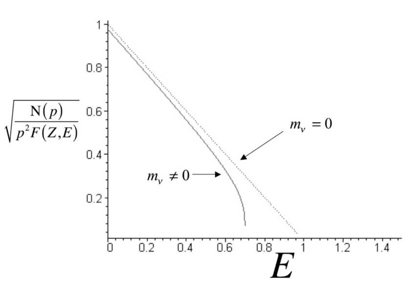
7.4. Wu eksperiment (1956)
Leta 1956 sta T.D. Lee in C.N. Yang, da operacija parnosti še ni bila preizkušena na razpadu \( \beta \). Ob času sta tudi obstajala dva delca \( \tau \) in \( \theta \), ki sta bila identična v skoraj vsem - spinu, masah in razpadnem času. V čemer sta se razlikovala je bila parnost produktov po razpadu. Lee in Yang sta predpostavila, da sta to isto delca, danes znan kot \( K \) mezon, ki razpade v produkt različnih parnosti, če je operacija parnosti ni invariantna za razpad \( \beta \).
C.S. Wu in njeni sodelavci so za dokaz kršitve parnosti šibke interakcije uporabili \( \beta \) razpada \( ^{60} \mathrm{Co} \). Pri zelo nizki temperaturi (\( T \sim 0.01 K \), da ni termičnih motenj) so uskladili spine \( ^{60} \mathrm{Co } \) s tem, da so uskladili njihove magnetne momente v magnetnem polju. Z obračanjem magnetnega polja so dosegli, da so se tudi spini zasukali v nasprotno smer. Ker se je vzorec elektronskih emisij razlikoval za različno obrnjena magnetna polja.
Kobalt razpade v vzburjeno stanje niklja, ki razpade preko \( \gamma \) razpada in ob tem odda foton. Takrat se je že vedelo, da je elektromagnetna interakcija invariantna na parnost, kar je pomenilo, da so lahko preverili, kako dobro so bili spini poravnani med sabo. Porazdelitev detekcij fotona ima maksimum v smeri osi jedrovega spina. V primeru, če ne bi bilo poravnani spini, bi fotone zaznali v vseh smereh enako verjetno, tako pa jih niso.
Eksperiment je pokazal, da se v nasprotnem magnetnem polju, poveča zaznava \( \beta \) delcev v smeri obratne vrednosti spina jedra.
Spina elektrona in nevtrina kažeta v isto smer, medtem ko imata sučnosti obraten predznak, torej \( \lambda_e = -\frac{1}{2} \) ter \( \lambda_{\nu} = - \frac{1}{2} \).
Vir: Krane: Introductory Nuclear Physics, p. 312 in Wikipedia Wu 1956
7.5. Ročnost (ang. chirality) ter sučnost (ang. helicity)
Kakor smo že v prejšnjih poglavjih povedali, je sučnost definirana kot projekcija spina na smer gibanja. To posledično pomeni, da ni Lorentz invariantna, saj lahko najdemo nek sistem s tako hitrostjo, ki bo obrnil smer gibanja.
Wu eksperiment je pokazal, da se krši parnost. Če imamo dva elektron z gibalno količino \( \vec{p}_e \) in sučnostjo \( \lambda_e = - \frac{1}{2} \) ter antinevtrino z gibalno količino \( \vec{p}_{\bar{\nu}} \) in sučnostjo \( \lambda_{\nu} = \frac{1}{2} \), bo operator parnosti zamenjal smeri gibalnih količin na \( \vec{p}_e ' = \hat{P} \vec{p}_e = - \vec{p}_e \) in \( \vec{p}_{\nu} ' = \hat{P} \vec{p}_{\nu} = - \vec{p}_{\nu} \). Hkrati pa se zamenjata tudi sučnosti na \( \lambda_e = \frac{1}{2} \), kar je v redu, vendar \( \lambda_{\nu} = - \frac{1}{2} \) pa ni v redu, saj takšno stanje antinevtrina ne obstaja.
Zanima nas, če lahko značilnost sučnosti posplošimo na fermione in antifermione. Z drugimi besedami, ali za vse fermione velja \( \lambda_f = -\frac{1}{2} \) ter za vse antifermione velja \( \lambda_{\bar{f}} = \frac{1}{2} \).
Z eksperimetnom, kjer zajamemo elektron
\[ ^{152}_{63} \mathrm{Eu} + e^- \to ^{152}_{62} \mathrm{Sm}^{\ast} + \nu_e \]
pa se je izmerilo sučnost nevtrina \( \nu_e \). Reakcija poteče preko t-kanala \( W^- \) (glej. Mandelstamove spremenljivke). Meritev je, da ima nevtrino sučnost \( \lambda_{\nu} = -\frac{1}{2} \). Tako pri šibkih interakcijah dobimo, da je nevtrino \( \nu_e \) levo-sučen z \( \lambda_{\nu} = - \frac{1}{2} \) ter antinevtrino desno-sučen z \( \lambda_{\bar{\nu}} = \frac{1}{2} \).
Pion \( \pi^+ \) ima \( J^P = 0^- \) s spinom \( 0 \). Pri šibkem razpadu \( \beta \) razpade preko s-kanala \( W^+ \),
\begin{align*} \pi^+ &\to e^+ + \nu_e \\ \pi^+ &\to \mu^+ + \nu_{\mu} \end{align*}kjer je razpad v mion \( 10^3 \) krat bolj verjetenb kot razpad v pozitron. To je posledice razlike v masi, saj ima pozitron mirovno maso \( m_e = 0.5 \mathrm{MeV} \) ter mion \( m_{\mu} = 100 \mathrm{MeV} \), kar je posledica matričnega elementa pri Fermiju in kvantne mehanike.
Pri šibki interakciji velja leptop flavour universality, kar pomeni, da je šibka interakcija slepa na okus leptonov. To je znano tudi kot lepton flavour violation tests oz. s krativo LFV.
Če se nahajamo v CMS razpada piona \( \pi^+ \), potem razpad izgleda kot
[skica]
Razpad izgleda enako tudi pri mionu.
Sučnosti sta \( \lambda_{\nu} = - \frac{1}{2} \) ter \( \lambda_{e^+} = - \frac{1}{2} \), kar pa ni v redu z našo posplošitvijo.
Verjetnost za razpad v antifermion s sučnostjo \( \lambda_{\bar{f}} = - \frac{1}{2} \) je premosorazmerna z \( \frac{1}{2} \left( 1 - \left| \vec{\beta}_{\bar{f}} \right| \right) \), kjer je \( \vec{\beta} \) velikost hitrosti. Hkrati pa je razpad v fermion s sučnostjo \( \lambda_f = \frac{1}{2} \) premosorazmeren v \( \frac{1}{2} \left( 1 + \left| \vec{\beta}_f \right| \right) \).
Velja
\[ P \left( \lambda_{e^+} = - \frac{1}{2} \right) \ll P \left( \lambda_{\mu^+} = - \frac{1}{2} \right) \]
Sučnost se zaradi kršitve parnosti ne ohranja povsem pri šibkih interakcijah. Zato iščemo kvantno število, ki se ogranja pri šibkih interakcija. Uvedemo ročnost (ang. chirality), ki jo označimo z \( \Psi_R \) ter \( \Psi_L \) oziroma v Diracovi bazi \( \left| R \right\rangle \) ter \( \left| L \right\rangle \). Operator parnosti ima sledeč učinek:
\[ \hat{P}: \Psi_R \to \Psi_L \]
Pri šibkih interakcija nastopajo samo levo ročni fermioni \( f_L \) in desno-ročni antifermioni \( \bar{f}_R \). Za brezmasne fermioni, kakor so nevtrini, imata ročno in sučnost enaka stanja:
\begin{align*} \left| \nu_L \right\rangle &= \left| \lambda_{\nu} = - \frac{1}{2} \right\rangle\\ \left| \bar{\nu}_{R} \right\rangle &= \left| \lambda_{\bar{\nu}} = \frac{1}{2} \right\rangle \end{align*}Medtem ko za masivne fermione pa velja
\[ \left| \lambda \right\rangle = a \left| L \right\rangle + b \left| R \right\rangle \]
To pomeni, da je stanje sučnosti superpozicija ročnosti.
Verjetnost, da je ročnost enaka sučnosti je \( \frac{1}{2} (1 + \beta) \) in verjetnost, da nista enaki, je \( \frac{1}{2} (1 - \beta) \).
Veljata torej enačbi
\begin{align*} \left| \lambda = - \frac{1}{2} \right\rangle &= \sqrt{\frac{1 + \beta}{2}} \left| L \right\rangle + \sqrt{\frac{1- \beta}{2}} \left| R \right\rangle \\ \left| \lambda = \frac{1}{2} \right\rangle &= \sqrt{\frac{1 + \beta}{2}} \left| R \right\rangle + \sqrt{\frac{1- \beta}{2}} \left| L \right\rangle \\ \end{align*}iz česar sledi
\[ \left| L \right\rangle = \sqrt{\frac{1 + \beta}{2}} \left| \lambda = - \frac{1}{2} \right\rangle + \sqrt{\frac{1 - \beta}{2}} \left| \lambda = \frac{1}{2} \right\rangle \]
Zanima nas pričakovana vrednost sučnosti pri šibkih interakcija. Fermioni pri šibki interakciji \( \beta^- \) razpada nastane v stanje levo-ročnosti \( \left| L \right\rangle \). Torej lahko iz tega izračunamo preferenčno smer
\begin{align*} \left\langle L \middle| \hat{\lambda} \middle| L \right\rangle &= \left( \frac{1 + \beta}{2} \right) \left\langle \lambda = - \frac{1}{2} \middle| \hat{\lambda} \middle| \lambda = - \frac{1}{2}\right\rangle + \left( \frac{1 - \beta}{2} \right) \left\langle \lambda = \frac{1}{2} \middle| \hat{\lambda} \middle| \lambda = \frac{1}{2} \right\rangle \\ &= - \frac{1}{2} \left( \frac{1 + \beta}{2} \right) + \frac{1}{2} \left( \frac{1 - \beta}{2} \right) = - \frac{\beta}{2} \end{align*}8. Razpadi \( \alpha \)
Obravnavamo razpad
\[ ^A_Z X \to ^{A - 4}_{Z - 2} Y + ^4_2 \mathrm{He} \]
Heliju pravimo tudi delec \( \alpha \), ki ima spin \( 0 \). Pri razpadu se odcepi celoten atom helija in ne posamezni nukleoni, ker je tako energijsko bolj ugodno.
Preko ohranitve kinetične energije in semi-empirične masne formule pridemo do enakosti
\[ T_{\alpha} + T_Y = \left( m_X - m_Y - m_{\alpha} \right) c_0 ^2 \]
Iz enakosti torej vidim, da zadostimo pogoju \( T_{\alpha} \ge 0 \) imamo omejitve na mase \( X \) in \( Y \). Masa je omejena z \( A \ge 155 \), ampak eksperimentalno pa \( A>200 \) - svinec \( ^{207}_{82} \mathrm{Pb} \).
Ohranjajo se vsa kvantna števila:
vrtilna količina jeder je enaka
\[ \Delta \vec{J} = \vec{l} \]
kjer je \( \vec{l} \) tirna vrtilna količina, ki jo odnese delec \( \alpha \)
- parnost
kvantno število stanj jeder.
[potencial delca alfa v jedru]
Oblika potencialne jame nam pove kolektivni potencial nuklonov v jedru. To so najbližji sosedi, saj imamo opravka s silo kratkega dosega. Jama nima dejansko ravnega dna, vendar je zadosten približek. Pri najbližjih sosedih imamo tudi residualni efekt možne interakcije.
Preko eksperimentalne regresije podatkov, se izlušči tudi Geiger-Nutallov zakon, ki pravi da so logaritmi razpolovnega časa \( \ln t_{\frac{1}{2}} \), razpadnega časa \( \ln\tau \) ter razpadne širina \( - \ln \Gamma \) premosorazmerni z
\[ c_1 \frac{Z}{\sqrt{T_{\alpha}}} + c_2 \sim \frac{1}{\sqrt{T_{\alpha}}} \]
9. Fizika osnovnih delcev
9.1. Hadroni
Hadrone sestavljajo kvarki \( q \) in antikvarki \( \bar{q} \). Kvarke skupaj drži močna/barvna sila. Posamezna vezana stanja morajo biti nevtralna glede na barvno silo. Nevtralnost se doseže tako, da se 3 vrste naboje \( R, G, B \) združi v neko kombinacijo skupaj s 3 antinaboji \( C, M, Y \).
Hadroni se delijo na
- barioni, ki imajo obliko \( \left\{ qqq \right\} \), ter
- mezone z obliko \( q \bar{q} \).
Mase kombinacij lahko računamo samo numerično, saj nekega preprostega modela za to ni.
Že leta 1938 so se spraševali, zakaj je proton tako stabilen in zakaj ne more razpasti preko
\[ p^+ \to e^- + \gamma \]
Zakon o ohranitvi leptonskega števila ni bil znan do leta 1953. Predlagali so zakon o ohranitvi barionskega števila. In ker je proton najlažji med barioni ne more razpasti v nič lažjega in je s tem zagarantirana njegova stabilnost. Vir: (Griffiths, David J., 2007)
Za lažjo obravnavo pri močnih in elektromagnetnih interakcijah vpeljemo barionsko kvantno število. Barion ima vrednost \( B = 1 \), njegov antidelec, antibarion, \( B = - 1 \), drugače pa je \( B = 0 \).
Kot primer ohranitve gibalne količine, si poglejmo 3 reakcija trkanja protonov in analizirajmo, kaj je dovoljeno in kaj ni.
\[ p p \to p p \bar{p} p \]
Na desni strani imamo dva bariona, torej je \( B_L = 2 \). Na desni strani pa imamo 3 barione in en antibarionov, kar pomeni, da je barionsko število enako \( B_D = 3 - 1 = 2 \). Torej je tak produkt dovoljen.
\[ p p \to p p \pi^+ \pi^- \]
V tem primeru imamo tako na levi kot na desni strani barionsko število enako \( B_L = B_D = 2 \). Tudi število mezonov (pion) se ohranja, vendar ker nista bariona imata barionsko število enako \( B = 0 \).
\[ p p \to \pi^+ \pi^+ p \bar{p} \]
V tem primeru imamo na levi strani \( B_L = 2 \), na desni strani pa \( B_D = 0 \), saj imata piona, kakor prej barionsko število 0, proton in antiproton pa nasprotni vrednosti in se odštejeta.
Bolj natančno se tudi število delcev in antidelcev ne ohranja. Na levi strani imamo dva protona, vsak je sestavljen iz 2 zgornjih in 1 spodnjega kvarka - torej dvakrat po 3 delce je 6. Na levi strani pa imamo pion, ki sta sestavljena iz enega delca in enega antidelca, ter proton iz 3 delcev in antiproton iz 3 antidelcev. \( 6 = 0 \) pa vemo, da ne drži.
9.1.1. Izospin
Hadronska stanja v kvarkovskem modelu predstavimo s kvantnimi števili kot so barionsko število, vrtilna količina, itd. Možnih hadronskih stanj iz treh kvarkov \( u, d, s \) je \( 3^3 = 27 \).
Za razlikovanje med njimi uvedemo novo kvantno število - (močni) izospin \( I \).
Delec \( \Psi \), ki je v stanjih
\[ \left| p \right\rangle = \left| I = \frac{1}{2}, I_3 = \frac{1}{2} \right\rangle \]
ali
\[ \left| n \right\rangle = \left| I = \frac{1}{2}, I_3 = - \frac{1}{2} \right\rangle \]
ima dobro kvantno število za jedrsko/močno interakcijo.
S pomočjo izospina se lahko tudi priborimo do naboja \( Q \) preko enačbe
\[ Q = I_3 + \frac{1}{2} \]
Izospin lahko pripišemo tudi posameznim kvarkom. Tako je zgornji kvark
\[ \left| u \right\rangle = \left| I = \frac{1}{2}, I_3 = \frac{1}{2} \right\rangle \]
in spodnji kvark
\[ \left| d \right\rangle = \left| I = \frac{1}{2}, I_3 =- \frac{1}{2} \right\rangle \]
Pri stanjih, ki vsebujejo več delcev - proton, nevtron - kombiniramo izospine enako kot spine in iščemo stanja z ustreznimi simetrijami.
Definiramo izospinski formalizem, ki je podoben spinskemu z uporabo ladder operator-ja:
\begin{align*} I_3 \left| p \right\rangle &= \frac{1}{2} \left| p \right\rangle \\ I_3 \left| n \right\rangle &= - \frac{1}{2}\left| n \right\rangle \end{align*}Preko ladder operator-ja sistemu dvignemo ali spustimo kvantna števila.
Iz tega potem sledijo enakosti
\begin{align*} I_+ \left| p \right\rangle &= 0 \\ I_+ \left| n \right\rangle &= \left| p \right\rangle \\ I_- \left| p \right\rangle &= \left| n \right\rangle \\ I_- \left| n \right\rangle &= 0 \end{align*}Če za pomoč uporabimo še vrtilno količino, definiramo
\[ J_- = \sum\limits_{i = 1}^2 J_{-i} \]
iz česar sledi
\[ J_- \left| \uparrow \uparrow \right\rangle = N \left( \left| \uparrow \downarrow \right\rangle + \left| \downarrow \uparrow \right\rangle\right) \ldots \left| s = 1, s_z = 0 \right\rangle \]
9.1.2. Sistematična konstrukcija barionskih stanj
Poglejmo si permutacijsko simetrijo funkcij stanja z več delci. Za \( n = 2 \) imamo dva enodelčna stanja \( \phi_a \) in \( \phi_b \). Potem imamo linearno kombinacijo teh dveh stanj
\[ \Psi_S (1, 2) = \frac{1}{\sqrt{2}} \left( \phi_a (1) \phi_b(2) + \phi_a (2) \phi_b (1) \right) \]
Za dobljeno linearno kombinacijo imamo neločljiva delca 1 in 2, saj
\[ \Psi_S (1, 2) = \Psi_S (2, 1) \]
Antisimetrična funkcija stanja pa bi bila
\[ \Psi_A = \frac{1}{\sqrt{2}} \left( \phi_a (1) \phi_b (2) - \phi_a (2) \phi_b (1) \right) \]
Dobljeno stanje nima več neločljivih delcev, ampak velja
\[ \Psi_A (1, 2) = - \Psi_A (2, 1) \]
Tako stanje dobimo pri fermionih. Če je \( a = b \), potem je funkcija stanja enaka \( 0 \) zaradi Paulijeve prepovede. In podobna (a)simetrija velja za vse sisteme delcev.
V našem naboru operiramo z dvema delcema \( u \) in \( d \). Želimo sistematično skonstruirati barionska stanja.
Imamo dva stanja, ki sta simetrična na permutacije
\begin{align*} \Psi_{S1} &= \left| u \, u \, u\, \right\rangle \\ \Psi_{S2} &= \left| d \, d \, d \right\rangle \end{align*}Iz prej definiranega formalizma sledita enakosti za kvarkovski model
\[ I_- \left| u \right\rangle = \left| d \right\rangle \quad I_+ \left| d \right\rangle = \left| u \right\rangle \]
Tretje možno stanje dobimo preko
\begin{align*} \Psi_{S3} &= \hat{I}_- \left| u \, u \, u \right\rangle \\ &= \sum\limits_{i = 1}^3 \hat{I}_-^i \left| u \, u \, u \right\rangle \\ &= \frac{1}{\sqrt{3}} \left[ \left| d \, u \, u \right\rangle + \left| u \, d \, u \right\rangle \left| u \, u \, d \right\rangle\right] \end{align*}Na podoben način, samo z \( I_+ \) in \( \Psi_{S2} \) dobimo 4. simetrično stanje \( \Psi_{S4} \). S tremi kvarki to pomeni 27 stanj.
Nadaljujemo s formalizmom na kvarkovskem modelu in velja
\begin{align*} I_+ \left| u \right\rangle &= 0 \\ I_+ \left| d \right\rangle &= \left| u \right\rangle \\ I_- \left| u \right\rangle &= \left| d \right\rangle \\ I_- \left| d \right\rangle &= 0 \end{align*}- Čudnost
Obravnavajmo reakcijo
\[ \pi^- p \to K^0 \Lambda ^0 \]
Delci, kakor so K-barioni, \( \Lambda \), \( \Sigma \), itd. so ustvarjeni zelo hitro - časovna skala reda \( 10^{-23} s \) - razpadejo pa relativno počasi - časovna skala \( 10^{-10}s \). Danes vemo, da je temu tako, ker jih ustvari močna sila, vendar razpadejo pa preko šibke interakcije. Leta 1953 sta Gell-Mann in Nishijima predlagala, da se tem delcem pripiše nova lastnost, čudnost (ang. strangeness) \( S \). \( K \)-mezon ima barionsko število \( B = 0 \) in čudnost \( S = 1 \), medtem ko \( \Lambda \) ima barionsko število \( B = 1 \) ter čudnost \( S = - 1 \).
Čudnost se ohranja pri močnih in EM interakcija, vendar ne pri šibki interakciji. Iz tega primera sledi tudi lekcija, da za dober opis jedrskih reakcij potrebujemo vsaj 2 kvantni števili.
Torej, kakor smo se sedaj naučili, zgornja reakcija nastane preko močne interakcije in tako je čudnost ohranjena. Hkrati pa pri razpadu, ko tak delec razpade, npr.
\[ \lambda \to p^+ + \pi^- \]
se čudnost ne ohranja, saj razpade preko šibke interakcije.
Vir: (Griffiths, David J., 2007)
Dodamo kvark \( s \), čudnost (ang. strange), ki nosi tudi število čudnost \( S = 1 \).
Sedaj imamo 3 kvarke, kar pomeni, da imamo 27 kombinacij za barione. 4 smo jih že povedali v prejšnjem primeru.
Imamo 6 simetričnih stanj, ki pridejo iz
\[ \Psi_{S10} = \left| s \, s \, s \right\rangle \]
Da se jih razpiše uporabi primera \( \Psi_{S3/S4} \) kjer zamenjaš \( u \) in \( d \) kvarka s \( s \) kvarkom.
4 simetrična stanja so še sestavljena iz samo \( d \) in \( u \) kvarkov.
Potem imamo eno popolnoma antisimetrično stanje
\[ \Psi_{A1} = \frac{1}{\sqrt{6}} \left( \left| u \, d \, s \right\rangle - \left| d \, u \, s \right\rangle + \left| u \, s \, d \right\rangle - \left| d \, s \, u \right\rangle + \left| s \, u \, d \right\rangle - \left| s \, d \, u \right\rangle \right) \]
Preostane nam še 16 kombinacij z mešano simetrijo. Imamo 8 mešanih asimetričnih stanj MA#.
\begin{align*} \Psi_{MA1} &= \frac{1}{\sqrt{2}} \left( \left| u \, d \, u \right\rangle - \left| d \, u \, u \right\rangle\right) \\ & \vdots\\ \Psi_{MA8} &= \ldots \end{align*}Stanje \( \Psi_{MA1} \) je antisimetrično na prva 2 kvarka in simetrično na ostale.
Poleg tega pa imamo še 8 simetričnih kvarkov
\begin{align*} \Psi_{MS1} &= \frac{1}{\sqrt{6}} \left( \left| u \, d \, u \right\rangle + \left| d \, u \, u \right\rangle - \left| u \, u \, d \right\rangle\right) \\ & \vdots \\ \Psi_{MS8} &= \ldots \end{align*}Stanje \( \Psi_{MS1} \) je simetrično na zamenjavo prvih dveh kvarkov. Sedaj smo zgradili funkcije stanj, ki tvorijo stanja okusov.
Skupna funkcija stanja bariona, ki mora biti vedno antisimetrična, je
\[ \Psi_{barion} \sim \left| \Psi \left( \vec{r} \right) \right\rangle \left| \Psi_{okus} \right\rangle \left| \Psi_{barva} \right\rangle \left| \Psi_{spin} \right\rangle \]
Funkcija \( \Psi \left( \vec{r} \right) \) predstavlja krajevno funkcijo in je ponavadi simetrična. Produkt dveh simetričnih funkcij je simetrična funkcija. Prav tako je produkt funkcij stanj okusa in spina simetričen. Torej je lahko edina antisimetrična funkcija funkcija barve.
Funkcija mora biti antisimetrična, da zadosti Fermi-Diracovo statistiki in posledično Paulijevi prepovedi, saj imamo opravka s 3 fermioni.
Produkt
\[ \Psi_{S1-10} (okus) \Psi_{S1-4} (spin) \]
ustreza spinu \( J = \frac{3}{2} \) in predstavlja dekuplet barionov s tem spinom. Zgodovinsko vemo, da je produkt za \( \Delta^{++ } \) simetričen, saj ima stanje \( \left| u \, u \, u \right\rangle \). Hkrati pa tudi eksperimentalno vemo, da je spin \( J = \frac{3}{2} \) s funkcijo stanja \( \left| \uparrow \uparrow \uparrow \right\rangle \) simetričen. Iz tega ponovno sledi, da mora barvni del funkcije stanja biti antisimetričen.
Torej bomo vzeli antisimetrično funkcijo okusov \( \Psi_{A1} \) ter jo prilagodili za barvne potrebe
\[ \left| \Psi_{barva} \right\rangle = \frac{1}{\sqrt{6}} \left( \left| R \, G \, B \right\rangle - \left| G \, R \, B \right\rangle + \left| R \, B \, G \right\rangle - \left| G \, B \, R \right\rangle + \left| B \, R \, G \right\rangle - \left| B \, G \, R \right\rangle\right) \]
9.1.3. Hipernaboj
Uvedemo še eno dobro kvantno število, hipernaboj \( Y \)
\[ Y = B + S \]
kjer je \( S \) čudnost. Prav tako iz tega sledi zveza za naboj
\[ Q = I_3 + \frac{B + S}{2} \]
9.1.4. Eksperiment: razmerje magnetnega dipolnega momenta protona in nevtrona
Teoretične rezultate tega, kar smo do sedaj zapisali, lahko primerjamo z rezultati eksperimentov. Kakor piše v naslovu, bomo to primerjali preko magnetnih dipolnih momentov protona in nevtrona.
Iz našega modela, lahko proton zapišemo kot
\[ \Psi_p = \Psi_{MS1} (okus) \Psi_{MS1} (spin) + \Psi_{MA1} (okus) \Psi_{MA1} (spin) \]
Upoštevamo, da ima proton spin \( \frac{1}{2} \), in se nam funkcija stanja protona v
\begin{align*} \Psi_p &= \frac{1}{\sqrt{2}} \left[ \left| u \, d \, u \right\rangle - \left| d \, u \, u \right\rangle\right] \left[ \left| \uparrow \, \downarrow \uparrow \right\rangle - \left| \downarrow \, \uparrow \, \uparrow \right\rangle\right] + \frac{1}{\sqrt{6}} \left[ \left| u \, d \, u \right\rangle + \left| d \, u \, u \right\rangle - \left| u \, u \, d \right\rangle\right] \left[ \left| \uparrow \, \downarrow \, \uparrow \right\rangle + \left| \downarrow \, \uparrow \, \uparrow \right\rangle - \left| \uparrow \, \uparrow \, \downarrow \right\rangle\right] \\ &= \frac{1}{\sqrt{18}} \left[ 2 \left| u \, \uparrow \, u \uparrow \, d \, \downarrow \right\rangle - \left| u \, \uparrow \, u \, \uparrow \, d \, \downarrow \right\rangle + \ldots \right] \end{align*}Za izračun potrebujemo tudi operator magnetnega momenta
\[ \hat{\vec{\mu}}_i = g_s \frac{e_0 Q_i \hat{\vec{s}}_i}{2m_i} \]
kjer je \( g_s \) giromagnetno razmerje, \( Q_i \) delež naboj, \( \vec{s}_i \) spin in \( m_i \) masa kvarka. Ker operiramo s fermioni, ki imajo spin \( \frac{1}{2} \), je \( g_s = 2 \). Delež naboja je za \( u \) kvark enak \( Q_u = \frac{2}{3} \) in za \( d \) kvark \( Q_d = \frac{1}{3} \). Maso kvarkov pa ocenimo na \( \frac{m_n}{3} \), kjer je \( m_n = 940 \mathrm{MeV} \) masa nevtrona. Pri spinu pa nas zanima projekcija na os, torej \( \vec{s}_z \). Magnetni moment celotnega delca je tako vsota
\[ \hat{\vec{\mu}} = \sum\limits_i^{} \hat{\vec{\mu}}_i \]
Če apliciramo operator magnetnega momenta na \( \Psi_p \), dobimo
\[ \hat{\mu}_z \Psi_p = \mu_p \Psi_p \]
iz česar sledi
\[ \mu_p = \frac{e_0}{2 m_q} \]
Na analogen način se priborimo tudi do magnetnega momenta za nevtron, ki je
\[ \mu_n = -\frac{2}{3} \frac{e_0}{2 m_q} \]
Da se nam napake in \( m_q \) pokrajša, izrazimo to v razmerju
\[ \frac{\mu_n}{\mu_p} = - \frac{2}{3} \]
Če to primerjamo z eksperimentom, ki nam poda razmerje
\[ \frac{\mu_n}{\mu_p} \sim 0.685 \]
vidimo, da se rezultat precej dobro ujema.
9.1.5. Mezoni
V uvodu o hadronih smo povedali, da so mezoni stanja vezanih kvarkov in antikvarkov \( q \bar{q} \) z barionskim številom \( B = 0 \). Za naše potrebe vpeljemo operator konjugacije naboja (ang. charge conjugation, krajše C-parity).
\[ \hat{C}: \left| q \right\rangle \to \left| \bar{q} \right\rangle \]
Za ta operator veljata naslednji enakosti
\begin{align*} \hat{C} \left| q \right\rangle &= \lambda \left| \bar{q} \right\rangle \\ \hat{C} ^2 \left| q \right\rangle &= \left| \lambda \right| ^2 \left| q \right\rangle \end{align*}iz česar sledi \( \lambda = \pm 1 \).
Dogovrimo se, da veljata
\begin{align*} \hat{C} \left| u \right\rangle &= - \left| \bar{u} \right\rangle\\ \hat{C} \left| d \right\rangle &= + \left| \bar{d} \right\rangle \end{align*}Spomnimo se, da sta izospinski stanji za \( u \) in \( d \) kvark definirani kot
\[ \left| u \right\rangle = \left| I = \frac{1}{2}, I_3 = \frac{1}{2} \right\rangle \quad \left| d \right\rangle = \left| I = \frac{1}{2}, I_3 = - \frac{1}{2} \right\rangle \]
Prav tako so veljale zveze
\begin{align*} I_3 \left| u \right\rangle &= + \frac{1}{2} \left| u \right\rangle \\ I_+ \left| u \right\rangle &= 0 \\ I_- \left| u \right\rangle &= \left| d \right\rangle \end{align*}Za antidelce pa veljajo naslednje zveze:
\begin{align*} I_3 \left| \bar{u} \right\rangle &= - \frac{1}{2} \left| \bar{u} \right\rangle \\ I_3 \left| \bar{d} \right\rangle &= + \frac{1}{2} \left| \bar{d} \right\rangle \\ I_- \left| \bar{d} \right\rangle &= - \left| \bar{u} \right\rangle \\ I_+ \left| \bar{u} \right\rangle &= - \left| \bar{d} \right\rangle \end{align*}- Mezonski spekter
Preden nadaljujemo, se spomnimo, kako smo stanja zapisovali spinov.
Stanje, kjer oba spina kažeta navzgor, smo zapisali
\[ \left| \uparrow \, \uparrow \right\rangle = \left| S = 1, S_z = 1 \right\rangle \]
Stanji z mešanima spinoma smo zapisali kot
\[ \frac{1}{\sqrt{2}} \left[ \left| \uparrow \, \downarrow \right\rangle - \left| \downarrow \, \uparrow \right\rangle \right] = \left| S = 1, S_z = 0 \right\rangle \]
oziroma
\[ \frac{1}{\sqrt{2}} \left[ \left| \uparrow \, \downarrow \right\rangle + \left| \downarrow \, \uparrow \right\rangle \right] = \left| S = 0, S_z = 0 \right\rangle \]
Ostane nam še stanje, kjer oba spina kažeta navzdol, torej
\[ \left| \downarrow \, \downarrow \right\rangle = \left| S = 1, S_z = -1 \right\rangle \]
Obravnavajmo sedaj mezone \( \pi \). Ker so mezoni, imajo po definiciji barionsko število \( B = 0 \), in pa spin imajo enak \( S = 0 \). Po definiciji imajo torej hipernaboj \( Y = 0 \).
Stanje piona \( \pi^+ \) zapišemo kot
\[ \left| \pi^+ \right\rangle = \left| u \, \bar{d} \right\rangle \]
Upoštevajoč prej omenjeni izospinski stanji za kvarka, bomo na enak način kot za spin, določili, da je izospin enak \( I = 1 \), ter projekcija enaka \( I_3 = + 1 \). Z uporabo operatorja \( I_- \) prvič dobimo stanje za pion \( \pi^0 \), ki je
\[ I_- \left| u \, \bar{d} \right\rangle = \frac{1}{\sqrt{2}} \left( \left| d \, \bar{d} \right\rangle - \left| u \, \bar{u} \right\rangle\right) = \left| I=1, I_3 = 0 \right\rangle = \left| \pi^0 \right\rangle \]
Ko ponovno operator uporabimo na \( \left| \pi^0 \right\rangle \), pa dobimo
\[ I_- \left| \pi^0 \right\rangle = \left| d \, \bar{u} \right\rangle = \left| I = 1, I_3 = -1 \right\rangle = \left| \pi^- \right\rangle \]
Tako smo sedaj definirali triplet \( \pi^{\pm, 0} \).
S tremi kvarki \( u \), \( d \), \( s \) lahko tako tvorimo 9 kombinacij.
Kaon \( K^+ \) dobimo tako, da v stanju \( \pi^+ \) zamenjamo \( d \) kvark s \( s \) kvarkom:
\[ \left| K^+ \right\rangle = \left| u \, \bar{s} \right\rangle \]
Izospin kaona \( K^+ \) je \( \frac{1}{2} \) ter hipernaboj \( Y = 1 \).
Če pri \( \pi^+ \) zamenjamo \( u \) kvark s \( s \) kvarkom, dobimo anti \( K^0 \):
\[ \left| \overline{K^0} \right\rangle = \left| s \bar{d} \right\rangle \]
s hipernabojem \( Y = -1 \) in izospinom \( I_3 = \frac{1}{2} \).
Zamenjava \( d \) kvarka s \( s \) kvarkom v stanju \( \pi^- \), nam poda kaon \( K^- \), ki ima hipernaboj \( Y = -1 \) ter izospin \( I_3 = - \frac{1}{2} \):
\[ \left| K^- \right\rangle = \left| s \, \bar{u} \right\rangle \]
Nazadnje, menjava \( u \) kvarka s \( s \) kvarkom nam poda kaon \( K^0 \) s hipernabojem \( Y = 1 \) in izospinom \( I_3 = - \frac{1}{2} \).
To je skupno samo 8 stanj. 9. stanje je singlet
\[ \left| \eta_0 \right\rangle = \frac{1}{\sqrt{3}} \left( \left| d \, \bar{d} \right\rangle + \left| u \, \bar{u} \right\rangle + \left| s \, \bar{s} \right\rangle\right) \]
katerega ortogonalno stanje je
\[ \left| \eta_8 \right\rangle = \frac{1}{\sqrt{6}} \left( \left| u \, \bar{u} \right\rangle + \left| d \, \bar{d} \right\rangle - 2 \left| s \, \bar{s} \right\rangle\right) \]
V naravi pa najdemo stanja, ki so mešanica obeh:
\begin{align*} \left| \eta \right\rangle &= \sin \theta \left| \eta_0 \right\rangle + \cos \theta \left| \eta_8 \right\rangle \\ \left| \eta' \right\rangle &= \cos \theta \left| \eta_0 \right\rangle - \sin \theta \left| \eta_8 \right\rangle \end{align*}
9.2. Klein-Gordonova enačba
Schrödingerjeva enačba
\[ \frac{\partial \Psi}{\partial t} = - \frac{1}{2m} \nabla ^2 \Psi + V \left( \vec{r} \right) \Psi \]
kakor jo poznamo, ima dve težavi: ne deluje za relativistično delce ter za delce, ki imajo spin različen od \( 0 \), saj je to dodatna prostostna stopnja, ki jo moramo vzeti v zakup. Relativistični del težave reši Klein-Gordonova enačba, ki jo bomo izpeljali. Za spin \( s = \frac{1}{2} \) nam služi Diracova enačba in za spin \( s = 1 \) je Procova enačba. Kot zabavno dejstvo, po (Griffiths, David J., 2007) je Schrödinger odkril relativistično enačbo, vendar jo je opustil za nerelativistično, ko ni podala Bohrovih energijskih nivojev za vodik.
Spomnimo se, da imamo pri nerelativistični kvantni mehaniki sledeče operatorje:
\begin{align*} \hat{H} & = \hat{E} = \mathrm{i} \frac{\partial }{\partial t} \\ \hat{p} &= \frac{1}{\mathrm{i}} \vec{\nabla} \\ \hat{V} &= V \left( \vec{r} \right) \\ \hat{T} &= \frac{\hat{p} ^2}{2m} = - \frac{\hbar ^2}{2m} \nabla ^2 \end{align*}Do relativistične enačbe pridemo tako, da vzamemo izraz za energijo
\[ E ^2 = \vec{p} ^2 + m ^2 \]
Nadomestimo količine z njihovimi operatorji, torej \( E \to \hat{E} \) in \( p \to \hat{p} \) ter operatorjem pustimo, da deluje na valovno funkcijo \( \Psi \).
\[ - \frac{\partial ^2 }{\partial t ^2 } \Psi = \nabla ^2 \Psi + m ^2 \Psi \]
Prestavimo vse elemente na eno stran in izpostavimo valovno funkcijo,
\[ \left( \frac{\partial ^2 }{\partial t ^2} - \nabla ^2 + m ^2 \right) \Psi = 0 \]
Če uporabimo Einsteinovo notacijo, lahko diferenciale zapišemo z
\[ \partial_{\mu} = \left( \frac{\partial }{\partial t} , \vec{\nabla} \right) \quad \partial^{\mu} = \left( \frac{\partial }{\partial t} , - \vec{\nabla} \right) \]
Tako lahko kot skalarni produkt teh dveh diferencial, definiramo d’Alembertov operator
\[ \square = \partial_{\mu} \partial^{\mu} = \frac{\partial ^2 }{\partial t ^2} - m ^2 \]
S tem zapisom je torej Klein-Gordonova enačba
\[ \left( \square + m ^2 \right) \Psi = 0 \]
9.2.1. Rešitev Klein-Gordonove enačbe
Ravni val
\[ \Psi(x) = N e^{- \mathrm{i} p x} = N \exp \left\{ - \mathrm{i} E t + \vec{p} \vec{r} \right\} \]
kjer je \( \mathrm{i} p x \) 4-vektor in \( N \) normalizacija, kakor opisan v začetnih poglavjih teh zapiskov reši KG enačbo. Rešitev je v tem primeru
\[ E ^2 = \vec{p} ^2 - m ^2 \]
Tako kot vsi pred nami naletimo na problem, saj ima enačba dve možni rešitvi za 3-vektor \( \vec{p} \) - pozitivno in negativno. Za razliko od drugih problemov v življenju, tega ne moremo samo ignorirati.
9.2.2. Drugi problem Klein-Gordonove enačbe
Nerelativistično je verjetostna gostota definirana kot \( \rho = \left| \Psi \right| ^2 = \Psi^{\ast} \Psi \). Zanima nas spreminjanje verjetnostne gostote skozi čas \( \frac{\partial \rho}{\partial t} \).
Obravnavajmo prosti delec, torej nimamo potenciala \( V = 0 \). Schrödingerjevo enačbo pomnožimo z \( - \mathrm{i} \Psi^{\ast} \), da dobimo
\[ \Psi^{\ast} \frac{\partial \Psi}{\partial t} = + \frac{\mathrm{i}}{2m} \Psi^{\ast} \nabla ^2 \Psi \]
Tej enačbi prištejemo Schrödingerjevo enačbo, ki smo jo pomnožili z \( - \mathrm{i} \Psi \) in kompleksno konjugirali
\[ \Psi \frac{\partial \Psi^{\ast}}{\partial t} = - \frac{\mathrm{i}}{2m} \Psi \nabla ^2\Psi^{\ast} \]
Rezultat je tako
\[ \Psi^{\ast} \frac{\partial \Psi}{\partial t} + \Psi \frac{\partial \Psi^{\ast}}{\partial t} = \frac{\mathrm{i}}{2m} \left( \Psi^{\ast} \nabla ^2 \Psi - \Psi \nabla ^2 \Psi^{\ast} \right) \]
Na levi strani prepoznamo odvod produkta, na desni strani pa izpostavimo divergenco, da dobimo
\[ \frac{\partial }{\partial t} \left( \Psi \Psi^{\ast} \right) = - \vec{\nabla} \frac{\mathrm{i}}{2m} \left( \Psi \vec{\nabla} \Psi^{\ast} - \Psi^{\ast} \vec{\nabla} \Psi \right) \]
Na levi strani dobimo izraz za verjetnostno gostoto, na desni strani pa definiramo verjetnostni tok kot
\begin{equation} \label{eq:13} \vec{\jmath} = \frac{\mathrm{i}}{2m} \left( \Psi \vec{\nabla} \Psi^{\ast} - \Psi^{\ast} \vec{\nabla} \Psi \right) \end{equation}Končna enačba je tako
\[ \frac{\partial \rho}{\partial t} = - \vec{\nabla} \vec{\jmath} \]
kar je t.i. kontinuitetna enačba.
Relativistično ta pogoj zapišemo s pomočjo 4-vektorja kot
\[ \partial_{\mu} j^{\mu} = 0 \]
kjer je \( j^{\mu} = \left( \rho, \vec{\jmath} \right) \). Ta zapis lahko povežemo z električnim tokom, ki mu je podoben \( j_e^{\mu} = e \left( \rho, \vec{\jmath} \right) \).
Do relativističnega pogoja smo prišli na analogen način, kakor pri nerelativističnem, samo da je sedaj
\[ j^{\mu} = \mathrm{i} \left( \Psi^{\ast} \partial^{\mu} \Psi - \Psi \partial^{\mu} \Psi^{\ast} \right) \]
Ničti člen 4-vektorja je
\[ j^0 = \rho = \mathrm{i} \left( \Psi^{\ast} \frac{\partial \Psi}{\partial t} - \Psi \frac{\partial \Psi^{\ast}}{\partial t} \right) \]
in relativistična verjetnostna gostota ni več enaka nerelativistični, ki smo jo povedali na začetku.
Ponovno preverimo stanje z vstavljanjem ravnega vala:
\[ j^{\mu} = 2 \left| N \right| ^2 p^{\mu} \]
Uporabimo on-shell pogoj \( p_0 = \pm E = \pm \sqrt{\left| \vec{p} \right|^2 + m ^2} \). Ničta komponenta tako postane
\[ j^0 = \rho = 2 \left| N \right| ^2 p_0 = 2 \left| N \right| ^2 \left( \pm E \right) \]
kjer naletimo na našo drugo težavo, ki sledi iz prve. Kako je lahko verjetnostna gostota negativna?
Za pozitivno energijo \( E \) je vse v najlepšem redu. Ko rešimo integral
\[ \int\limits_{}^{} \rho \, \mathrm{d} V = 1 \]
dobimo vrednost normalizacije enak \( \left| N \right| ^2 = \frac{1}{2E V}\), kjer je \( V \) volument in \( E \) energija.
Verjetnostna gostota ne more biti negativna, zato se poslužimo Feymnan-Stückelbergove interpretacije negativne energije.
Kot zgled si vzemimo pion \( \pi^+ \, (u \bar{d}) \) s spinom \( 0 \). Njegov antidelec je \( \pi^- \, (\bar{u} d) \). Povezuje ju C-parnosti.
Verjetnostni tok je še zmeraj enako definiran kot
\[ j^{\mu} = 2 \left| N \right| ^2 p^{\mu} \]
Namesto verjetnostnega pa bomo uporabili električni tok
\begin{align*} j_e^{\mu} \left( \pi^+ \right) &= e_0 2 \left| N \right| ^2 p^{\mu} \\ j_e^{\mu} \left( \pi^- \right) &= - e_0 2 \left| N \right| ^2 p^{\mu} \end{align*}Drugače lahko električni tok antidelca zapišemo kot
\[ j^{\mu}_e = e_0 2 \left| N \right| ^2 \mathbf{- p^{\mu}} = j_e^{\mu} \left( \pi^+, - p^{\mu} \right) \]
Naše pomembno spoznanje je, da je sevanje (oz. v obratni smeri, absorpcija) antidelca z gibalno količino \( p^{\mu} \) fizikalno ekvivalentno absorpciji (oz. v obratni smeri sevanje) delca z gibalno količino \( - p^{\mu} \).
Z drugimi besedami: pozitivne rešitve anti-delca, ki se giblje naprej v času, so enake negativnim rešitvam delca, ki se giblje nazaj v času.
Vrnimo se nazaj k ravnemu valu
\[ \Psi = N \exp \left\{ - \mathrm{i} \left( p_0 t - \vec{p} \vec{r} \right) \right\} \]
kjer je \( p_0 = \pm E \). Predznak lahko prenesemo iz energije \( \pm E t \) na čas \( E \left( \pm t \right) \). Za negativno energijo \( p_0 = - E \) eksponent tako postane
\[ \exp \left\{ - \mathrm{i} \left( -Et - \vec{p} \vec{r} \right) \right\} = \exp \left\{ \mathrm{i} \left( Et + \vec{p} \vec{r} \right) \right\} = e^{\mathrm{i} p x} \]
S tem smo obrnili smer časa.
Bralca naj opomnimo, da makroskopsko to ni v redu zaradi entropije. Iz izražave eksponenta lahko tako izrazimo negativen 4-vektor \( - p^{\mu} \), ki ga lahko pospravimo v električni tok. S fizikalnega vidika se to izida, saj imamo negativen in pozitiven naboj, ki odločata o smeri naboja.
9.2.3. EM interakcija
H Klein-Gordonovo enačbi bi radi dodali še elektromagnetno interakcijo. Naš odvod \( \partial_{\mu} \) zamenjamo z novim
\[ D_{\mu} = \partial_{\mu} + \mathrm{i} e A_{\mu} \]
ki vsebuje naboj \( e \). \( A_{\mu} \) sestavlja elektro/magnetni delec
\[ A_{\mu} = \left( V, \vec{A} \right) \]
kjer je \( \vec{A} \) vektorski potencial.
Relativistična valovna enačba se glasi
\[ \square A^{\mu} = j_e^{\mu} \]
ki ji dodamo Lorentzovo umeritev (ang. Lorentz gauge)
\[ \partial_{\mu} A^{\mu} = 0 \]
Opomnimo, da se \( D_{\mu} \) skriva v definiciji d’Alembertovega operatorja, ki potem preobrazi Klein-Gordonovo enačbo v
\begin{equation} \label{eq:12} -\mathrm{i} e \left( \partial_{\mu} A^{\mu} + A^{\mu} \delta_{\mu} \right) \Psi + e ^2 A ^2 \Psi + \left( \square + m ^2 \right) \Psi = 0 \end{equation}Člen \( e ^2 A ^2 \) zanemarimo, ker je majhen in bomo člene višjega reda zanemarili.
Vpeljemo operator potenciala interakcije \( \hat{V} = \mathrm{i} e \left( \partial_{\mu} A^{\mu} + A^{\mu} \partial_{\mu} \right) \), kar spremeni našo enačbo \ref{eq:12} v
\[ - \hat{V} \Psi + m ^2 \Psi = 0 \]
Matrični element v 1. redu je tako
\[ \mathcal{M}_{fi} = \frac{1}{\mathrm{i}} \left\langle \Psi_f \middle| \hat{V} \middle| \Psi_i \right\rangle = \frac{1}{\mathrm{i}} \int\limits_{}^{} \Psi^{\ast} _f \hat{V} \Psi_i \, \mathrm{d} ^4 x \]
Bralca opomnimo, da integriramo po 4 dimenzijah, saj smo v relativističnem prostoru.
Primer, obravnavan v nadaljevanju, je zelo podoben tistemu, ki je obravnavan v Halzen, Martin: Quarks and Leptons, Introductory Course in Modern Particle Physics, poglavje 4.2 “Spinless” Electron-Muon Scattering.
Opazujemo sipanje piona \( \pi^+ \) ter kaona \( K^+ \).
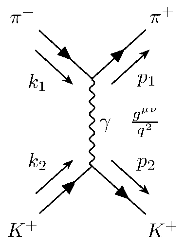
Pion \( \pi^+ \) pred sipanjem opišemo z enačbo ravnega vala
\[ \Psi_1 = N_1 e^{- \mathrm{i} k_1 x} \]
kjer ima gibalno količino \( k_1 \). Pion po sipanju opišemo s podobno enačbo, vendar je gibalna količina enaka \( p_1 \).
Tako lahko definiramo razliko gibalnih količin \( q = k_1 - p_1 \). Matrični element za pion pa je enak
\begin{align*} M_{fi}^{\pi} &= - \mathrm{i} \left( \mathrm{i} e \right) \int\limits_{}^{} \Psi_3^{\ast} \left( \partial_{\mu} A^{\mu} + A^{\mu} \partial_{\mu} \right) \Psi_1 \, \mathrm{d} ^4 x \\ &= e \int\limits_{}^{} \left[ \left( - \partial_{\mu} \Psi_3^{\ast} \right) \Psi_1 + \Psi_3 ^{\ast}\left( \partial_{\mu} \Psi_1 \right) \right] A^{\mu} \, \mathrm{d} ^4 x \end{align*}Stvar v oklepajih nas spominja na tok iz enačbe \ref{eq:13}. Definiramo prehodni tok (ang. transition current), v kateri imamo 2 funkciji in ne samo eno, kakor v prejšnjih primerih.
\[ j_{\mu} \left( \pi^+ \right) = \mathrm{i} e \left[ \Psi_3^{\ast} \left( \partial_{\mu} \Psi_1 \right) - \left( \partial_{\mu} \Psi_3 ^{\ast} \right) \Psi_1 \right] \]
Matrični element interakcije zapišemo kot produkt toka in polja
\[ M_{fi }^{\pi} = - \mathrm{i} \int\limits_{}^{} j_{\mu} \left( \pi^+ \right) \]
Za kaon sledi analogno. Ravni val pred sipanjem označimo z \( \Psi_2 \) in gibalno količino \( k_2 \) , ter po sipanju z \( \Psi_4 \) in gibalno količino \( p_2 \). Prehodni tok za kaone je
\[ j_{\mu} \left( K^+ \right) = \mathrm{i} e \left[ \Psi_4^{\ast} \left( \partial_{\mu} \Psi_2 \right) - \Psi_2 \left( \partial_{\mu} \Psi_4^{\ast} \right) \right] \]
in matrični element tudi
\[ M_{fi }^{K^+} = - \mathrm{i} \int\limits_{}^{} j_{\mu} \left( K^+ \right) A^{\mu} \, \mathrm{d} ^4 x \]
Primer obravnavamo kot interakcijo s fotonom preko Feynman-Stückelbergove interpretacije - to pomeni, da eden izmed sipanih delcev foton izseva (\( q = p_2 - k_2 \)), medtem kot da drugi absorbira (\( q = k_1 - p_1 \)).
Rečemo, da je kaon \( K^+ \) izvor valovnja, kar matematično pomeni
\begin{equation} \label{eq:14} \square A^{\mu} = j^{\mu} \left( K^+ \right) \end{equation}Za prej definirano razliko gibalnih količin dobimo
\[ j_{\mu} \left( \pi^+ \right) = e N_1 N_3 \left( p_1 + k_1 \right) _{\mu} e^{- \mathrm{i} q x} \]
in opazimo, da je krajevni del \( x \) samo v eksponentu.
Za vektorsko potencialno polje uporabimo nastavek \( A^{\mu} = B e^{- \mathrm{i} q x} \) in ob upoštevanju enačbe \ref{eq:14}
\[\square A^{\mu} = - q ^2 A^{\mu} = j^{\mu} \left( \pi^+ \right) = j^{\mu} \left( K^+ \right) \]
iz česar sledi
\begin{equation} \label{eq:15} A^{\mu} = - \frac{1}{q ^2} j^{\mu} \left( K^+ \right) \end{equation}Matrični element tako zapišemo kot
\[ M_{fi} = + \mathrm{i} \int\limits_{}^{} j_{\mu} \left( \pi^+ \right) \frac{1}{q ^2} j^{\mu} \left( K^+ \right) \, \mathrm{d} x ^4 \]
Definiramo faktor fotonski propagator (ang. photon propagator) \( \frac{g^{\mu \nu}}{q ^2} \).
Upoštevajoč fotonski propagator smo izpeljali matrični element za ang. current interaction.
\[ M_{fi} = + \mathrm{i} \int\limits_{}^{} j_{\mu} \frac{g^{\mu \nu}}{q ^2} j_{\nu} \, \mathrm{d} ^4 x \]
Če opazujemo Feynmanov diagram interakcije, stičišče pionov in fotona predstavimo z \( - \mathrm{i} e \left( k_1 + p_1 \right)_{\mu} \), stičišče kaonov in fotona pa z \( - \mathrm{i} e \left( k_2 + p_2 \right)_{\nu} \).
Matrični element posledično zapišemo kot
\[ M_{fi} = \underbrace{i e ^2 \left( p_1 + k_1 \right)_{\mu} \frac{g^{\mu \nu}}{q ^2} \left( k_2 + p_2 \right)_{\nu}}_{T_{fi}} N_1 N_2 N_3 N_4 \int\limits_{}^{} e^{\mathrm{i} \left( p_1 + p_2 - \left( k_1 + k_2 \right) \right)x} \]
kjer imamo v eksponentu krajevni del. Celoten integral lahko označimo z \( \delta \) funkcijo, kar pomeni, da se naš matrični element še nadalje preobrazi v
\[ M_{fi} = T_{fi} N_1 N_2 N_3 N_4 \left( 2 \pi \right)^4 \delta^{(4)} \left( p_1 + p_2 - \left( k_1 + k_2 \right) \right) \]
V vsakem verteksu našega Feynmanovega diagrama se ohranja gibalna količina preko virtualnega fotona, ki ima maso \( m_{\gamma} = q ^2 < 0 \). Sama interakcijo funkcionira preko t-kanala (glej Mandelstamove spremenljivke).
Iz tega sledi zapis za diferencialni presek 1. reda
\[ \mathrm{d} \sigma = \frac{\left| T_{fi} \right| ^2}{4 \left[ \left( k_1 k_2 \right)^2 - m_1 ^2 m_2 ^2 \right]^{\frac{1}{2}}} \left( 2 \pi \right)^4 \delta^{(4)} \left( k_1 + k_2 - p_1 - p_2 \right) \frac{1}{\left( 2 \pi \right) ^4} \frac{\mathrm{d} ^3 p_1}{ \left( 2E_1 \right)} \frac{\mathrm{d} p_2}{ \left( 2E_2 \right)} \]
Zadnji členi so posledica Lorentovega invariantnega faznega prostora - glej poglavje Zapis faznega prostora.
Za višje rede je matrični element linearna kombinacija \( \alpha \), ki je kvadrirana \( \alpha = \frac{e^2}{4 \pi} \).
\[ M \sim \alpha \left( \ldots \right) + \alpha ^2 \left( \ldots \right) + \alpha ^3 \left( \ldots \right) + \ldots \]
9.3. Diracova enačba
Kakor povedano v poglavju Klein-Gordonova enačbe, z Diracovo enačbo rešujemo problem Schrödingerjeve enačbe z relativističnimi delci, ki imajo spin \( s = \frac{1}{2} \). Pri spopadanju s problemom je Dirac želel doseči 2 stvari: linearnost v času \( \frac{\partial \rho}{\partial t} \), kar Klein-Gordonova ni, ter kovariantna. To, da je enačba kovariantna, pomeni, da mora biti linearna v \( \nabla \). Želimo tudi, da nimamo problema z verjetnostno gostoto, torej \( \rho \ge 0 \) - to je tudi vodilo Diraca, da se je reševanja sploh lotil, saj ni želel imeti negativne verjetnostne gostote!
Kot nastavek vzamemo
\[ \mathrm{i} \frac{\partial \Psi}{\partial t} = \left( - \mathrm{i} \vec{\alpha} \cdot \vec{\nabla} + \beta m \right) \Psi = \hat{H} \Psi \]
Hkrati mora dana enačba rešiti tudi Klein-Gordonovo enačbo iz prejšnjega poglavja.
S kvadriranjem nastavka dobimo sledečo transformacijo
\begin{align*} \left( \mathrm{i} \frac{\partial }{\partial } t \right) ^2 \Psi &= \hat{H} ^2 \Psi \\ &= \left( - \mathrm{i} \vec{\alpha} \vec{\nabla} + \beta m \right) \left( - \mathrm{i} \vec{\alpha} \vec{\nabla} + \beta m \right) \Psi \\ &= - \sum\limits_i^{} \alpha_i ^2 \frac{\partial ^2 \Psi}{\partial x_i ^2} - \sum\limits_{i > j}^{} \left( \alpha_i \alpha_j + \alpha_j \alpha_i \right) \frac{\partial ^2 \Psi }{\partial x_i \partial x_j} - \mathrm{i} m \sum\limits_{i }^{} \left( \alpha_i \beta + \beta \alpha_i \right) \frac{\partial \Psi}{\partial x_{i}} + \beta ^2 m ^2 \Psi \end{align*}Želimo doseči, da se zadnja vrstica pokrajša v obliko Klein-Gordonove enačbe
\[ - \frac{\partial ^2 \Psi }{\partial t ^2} = - \sum\limits_i^{} \frac{\partial ^2 \Psi}{\partial x_i ^2} + m ^2 \Psi \]
Iz tega sklepamo, da \( \alpha_i \) in \( \beta \) za \( i = 1, 2, 3 \) niso preprosti skalarji.
Da se vmesni vsoti pokrajšata torej velja
\begin{align*} \alpha_i \alpha_j + \alpha_j \alpha_i &= \left\{ \alpha_i, \alpha_j \right\} = 0 \\ \alpha_i \beta + \beta \alpha_i &= \left\{ \alpha_i , \beta \right\} = 0 && i = 1, 2, 3 \end{align*}Torej sta matriki \( \alpha_i \) in \( \beta \) antikomutatorja. Vidimo, da so \( \alpha_i \) in \( \beta \) matrike in iz zahtev po prostorskih stopnjah je najmanjša dimenzija vsaj 4. Za kvadrirane matrike velja, da so enake identiteti \( \alpha_i ^2 = I \), ter \( \beta ^2 = I \), ponovno zato da ustrezajo koeficientom Klein-Gordonove enačbe pri ustreznih členih.
Ker so naši koeficienti matrike, to pomeni, da je tudi naša valovna funkcija večkomponentni stolpični vektor \( \vec{\Psi} = \left[ \Psi_1 \, \Psi_2 \, \Psi_3 \, \Psi_4 \right]^T \). Vektorska valovna funkcija je bi-spinor
\[ \Psi = \begin{bmatrix} \phi \\ \chi \end{bmatrix} = N \omega e^{- \mathrm{i} p x} \]
kjer je
\[ \omega = \begin{bmatrix} \phi \\ \chi \end{bmatrix} \]
ter sta
\begin{align*} \phi &= \begin{pmatrix} 0 \\ 1 \end{pmatrix} \begin{pmatrix} 1 \\ 0 \end{pmatrix} \\ \chi &= \begin{pmatrix} 1 \\ 0 \end{pmatrix} \begin{pmatrix} 0 \\ 1 \end{pmatrix} \end{align*}Za predstavitev matrik \( \alpha_i \) in \( \beta \) najpogosteje uporabljamo Dirac-Paulijevo predstavitev
\[ \alpha = \begin{pmatrix} 0 & \sigma \\ \sigma & 0 \end{pmatrix} \quad \beta = \begin{pmatrix} I & 0 \\ 0 & I \end{pmatrix} \]
kjer \( I \) predstavlja \( 2 \times 2 \) identiteto matriko, ki jo najpogosteje zapišemo z \( 1 \), ter so \( \sigma \) Paulijeve matrike:
\[ \sigma_1 = \begin{pmatrix} 0 & 1 \\ 1 & 0 \end{pmatrix} \quad \sigma_2 = \begin{pmatrix} 0 & -\mathrm{i} \\ \mathrm{i} & 0 \end{pmatrix} \quad \sigma_3 = \begin{pmatrix} 1 & 0 \\ 0 & -1 \end{pmatrix} \]
Izbira teh matrik ni enolična, saj obstaja še mnogo dodatnih rešitev z rotacijami ozirom unitarnimi transformacijami
\[ \alpha' = U \alpha U^{-1} \quad \beta' = U \beta U^{-1} \]
kjer je \( U \) unitarna matrika. V uporabi je tako na primer tudi Weylova baza namesti Dirac-Paulijeve:
\[ \alpha' = \begin{pmatrix} -\sigma & 0 \\ 0 & \sigma \end{pmatrix} \quad \beta ' = \begin{pmatrix} 0 & I \\ I & 0 \end{pmatrix} \]
Rešitev Diracove enačbe nima pričakovanih 2 rešitev - delec, antidelec - ampak jih ima kar 4.
9.3.1. Kovariantna oblika Diracove matrike in Diracove \( \gamma \) matrike
Diracovo enačbo z leve strani pomnožimo z \( \beta \) in dobimo
\[ \mathrm{i}\beta \frac{\partial \Psi}{\partial t} = - \mathrm{i} \beta \alpha \nabla \Psi + m \Psi \]
Z uvedbo štirih Diracovih \( \gamma \) matrik \( \gamma^{\mu} = \left( \beta, \beta \alpha \right) \) ter uvedbe operatorja \( \cancel{\partial} = \gamma^{\mu} \partial_{\mu} \), pridobimo kovariantno obliko Diracove enačbe \ref{eq:16}
\begin{equation} \label{eq:16} \left( \mathrm{i} \cancel{\partial} + m \right) \Psi = 0 \end{equation}Z drugimi besedami je Diracova enačba sestavljena iz 4 diferencialnih enačb, ki pripadajo posamezni komponenti 4-vektorja \( \Psi \)
\[ \sum\limits_{k = 1}^4 \left[ \sum\limits_{\mu}^{} \mathrm{i} \left( \gamma^{\mu} \right)_{jk} \partial_{\mu} - \delta_{jk} m \right] \Psi_k = 0 \]
\( \gamma \) matrike so med seboj antikomutitativne, torej velja
\[ \left\{ \gamma^{\mu}, \gamma^{\nu} \right\} = \gamma^{\mu} \gamma^{\nu} + \gamma^{\nu} \gamma^{\mu} = 2 g_{\mu \nu} I \]
Zaradi načina definicije Diracove \( \gamma \) matrike, kjer je \( \gamma^0 = \beta \), velja tudi
\[ \gamma^{0 \dagger} = \gamma^0, \quad \left( \gamma^0 \right) ^2 = I \]
Vir: (Halzen, F. and Martin, Alan D., 1984)
Primer obravnava tudi (Halzen, F. and Martin, Alan D., 1984), na strani 104, poglavje Free-Particle Spinors.
Obravnavajmo primer prostega delca. Lastne rešitve Diracove enačbe so oblike
\[ \Psi = w (p) e^{- \mathrm{i} p x} \]
kjer je \( u \) 4-komponentni (bi)spinor neodvisen od kraja \( x \). Obliko rešitve vstavimo v kovariantno Diracovo enačbo
\[ \left( \mathrm{i} \cancel{\partial} - m \right) w (p) e^{- \mathrm{i} p x} = 0 \]
ali drugače zapisano
\[ \left[ \gamma^{\mu} p_{\mu} - m \right] w (p) = 0 \]
Najlažje pridobimo rešitev z \( \alpha \) in \( \beta \) matrikami, torej
\[ \left[ \vec{\alpha} \vec{p} + \beta m \right] w(p) = p_0 w \]
Opomba, da \( p_0 \) predstavlja ničto komponento četverca gibalne količine - energijo \( E \).
Če razpišemo matrike, enačba postane
\[ \begin{bmatrix} 0 & \vec{\sigma} \vec{p} \\ \vec{\sigma} & 0 \end{bmatrix} \begin{bmatrix} \phi \\ \chi \end{bmatrix} + \begin{bmatrix} m I & 0 \\ 0 & - m I \end{bmatrix} \begin{bmatrix} \phi \\ \chi \end{bmatrix} = \begin{bmatrix} p_{0} \phi \\ p_0 \chi \end{bmatrix} \]
Dobili smo sisteme enačb, ki nam ločita \( \phi \) in \( \chi \). Enačba ima 4 neodvisne rešitve: 2 za \( E > 0 \) ter 2 za \( E < 0 \).
Za mirujoč delec Diracova enačba postane
\[ p_0 w = \beta m w = \begin{bmatrix} mI & 0 \\ 0 & - mI \end{bmatrix} w \]
ki ima lastne vrednosti \( E = m, m, -m \) in \( -m \), ter pripadajoče lastne vektorje
\[ \begin{bmatrix} 1 \\ 0 \\ 0 \\ 0 \end{bmatrix} \quad \begin{bmatrix} 0 \\ 1 \\ 0 \\ 0 \end{bmatrix} \quad \begin{bmatrix} 0 \\ 0 \\ 1 \\ 0 \end{bmatrix} \quad \begin{bmatrix} 0 \\ 0 \\ 0 \\ 1 \end{bmatrix} \]
Po (Halzen, F. and Martin, Alan D., 1984), če je naš delec elektron, z nabojem \( -e_0 \), prvi dve rešitvi predstavljata njega. Drugi dve, z negativno energijo \( E > 0 \) pa njegov antidelec - pozitron.
Za četverec gibalne količine, ki je različen od \( 0 \), imamo sistem enačb
\[ \begin{bmatrix} m & \vec{\sigma} \vec{p} \\ \vec{\sigma} \vec{p} & - m \end{bmatrix} \begin{bmatrix} \phi \\ \chi \end{bmatrix} = p_0 \begin{bmatrix} \phi \\ \chi \end{bmatrix} \]
kjer imamo 2 enačbi za dva spinorja. Iz druge enačbe lahko izrazimo \( \chi \) kot
\[ \chi = \frac{\left( \vec{\sigma} \vec{p} \right) \phi}{p_0 + m} \]
Če pridobljeno izražavo vstavimo v prvo enačbo, dobimo kvadratno enačbo za energijo
\begin{align*} \left( \vec{\sigma} \vec{p} \right) \chi &= \left( p_0 - m \right) \phi \\ \left( \vec{\sigma} \vec{p} \right) ^2 \phi &= \left( p_0 - m \right) \left( p_0 + m \right) \phi \\ p_0 &= \pm \sqrt{p ^2 + m ^2} = \pm E \end{align*}Imamo možna stanja s pozitivno in negativno energijo. Najprej si poglejmo rešitve s pozitivno energijo. Namesto bispinorja \( w \), ki je odvisen zgolj od gibalne količine, uvedemo bispinor \( u(p, s) \), ki je dodatno odvisen še od \( s = 1, 2 \).
\[ w(p) = N \begin{bmatrix} \phi^{(s)} \\ \frac{\vec{\sigma} \vec{p}}{E + m} \phi^{(s)} \end{bmatrix} \]
kjer je \( N \) normalizacijska konstanta. Izberemo si, da je v kovariantno normalizacijo, za katero je
\[ \int\limits_{}^{} \rho \, \mathrm{d} V = 2E \]
Za normalizacijo velja ortogonalnostna relacija
\begin{equation} \label{eq:19} w^{\dagger} w = \left| N \right| ^2 \frac{2E}{E + m} \end{equation}Zaradi relacije \ref{eq:19} si tako izveremo normalizacijo \( N = \sqrt{E + m} \). Torej, sedaj zamenjamo \( w \) z \( u \) in je rešitev
\[ u(p, s) = \sqrt{E + m} \begin{pmatrix} \phi^{(s)} \\ \frac{\vec{\sigma} \vec{p}}{E + m} \phi^{(s)} \end{pmatrix} \]
kjer sta
\[ \phi^{(1)} = \begin{pmatrix} 1 \\ 0 \end{pmatrix} \quad \phi^{(2)} = \begin{pmatrix} 0 \\ 1 \end{pmatrix} \]
Rešitev za delce je tako
\[ \Psi = u(p, s) e^{- \mathrm{i} p x} \frac{1}{\sqrt{V}} \]
za \( p_0 = + E \) - pozitivne energijske rešitve.
Za rešitve z negativni energijami pa je
\[ w (p_0 = - E) = N \begin{pmatrix} - \frac{\vec{\sigma} \vec{p}}{E + m}\chi^{(s)} \\ \chi^{(s)} \end{pmatrix} \]
Ponovno uvedemo zapis odvisen od \( s \) in dobimo zapis za antidelec
\[ v (p, s) = \left( E + m \right)^{\frac{1}{2}} \begin{pmatrix} \frac{\vec{\sigma} \vec{p}}{E + m} \chi^{(s)} \\ \chi^{(s)} \end{pmatrix} \]
kjer sta
\[ \chi^{(1)} = \begin{pmatrix} 0 \\ 1 \end{pmatrix} \quad \chi^{(2)} = \begin{pmatrix} 1 \\ 0 \end{pmatrix} \]
Prednost, ki smo jo sedaj pridobili z Diracovo enačbo, je degenerativnost vsake rešitve v dva dodatna stanja. Torej obstaja še neka količina, ki komutira s Hamiltionianom \( H \) in parnostjo \( P \) (??). Operator spina \( \frac{1}{2} \vec{\Sigma} \) komutira s \( \hat{H} \) in \( \vec{P} \).
\[ \frac{1}{2} \vec{\Sigma} = \frac{1}{2} \begin{bmatrix} \vec{\sigma} & 0 \\ 0 & \vec{\sigma} \end{bmatrix} \]
Za Hamiltionian prostega delca \( \hat{H} = \vec{\alpha} \vec{p} + \beta m \) je komutacija s \( \frac{1}{2} \vec{\Sigma} \) enaka
\[ \left\{ \vec{H}, \frac{1}{2} \vec{\Sigma} \right\} = \mathrm{i} \left( \vec{\alpha} \times \vec{p} \right) I_{4 \times 4} \]
kjer ima operator spina osi postavljene v prostoru. Vidimo, da to ni dobro kvantno število, saj je komutacija različna od \( 0 \) in nima lastne baze.
Tako lahko sedaj vpeljemo nov operator, ki je komponenta “spina” v smeri gibanja, torej sučnost, saj je dobro kvantno število, da ločimo med degenerirami stanji.
\[ \hat{h} \left( \vec{p} \right) = \begin{bmatrix} \frac{\vec{\sigma} \vec{p}}{\left| \vec{p} \right|} & 0 \\ 0 & \frac{\vec{\sigma} \vec{p}}{\left| \vec{p} \right|} \end{bmatrix} \]
in tako je
\[ \left[ \hat{H}, \hat{h} \right] = 0 \]
Tako imamo sedaj dve stanji sučnosti
\[ \frac{\vec{\sigma} \vec{p}}{\left| \vec{p} \right|} \phi_{\pm} = \pm \phi_{\pm} \]
V literaturi se namesto \( \frac{\vec{\sigma} \vec{p}}{\left| \vec{p} \right|} \) uporablja tudi \( \vec{s} = \frac{\vec{\sigma}}{2} \), iz česar potem sledi \( \frac{\vec{s} \vec{p}}{\left| \vec{p} \right|} \).
Tako sedaj dobimo stanja
\[ \phi_+ = \left( E + m \right) ^{ \frac{1}{2}} \begin{pmatrix} 1 \\ 0 \\ \frac{\left| \vec{p} \right|}{E + m} \\ 0 \end{pmatrix} = u_R = u \left( p, \lambda = + 1 \right) \quad \phi_- = \left( E + m \right)^{\frac{1}{2}} \begin{pmatrix} 0 \\ 1 \\ 0 \\ - \frac{\left|\vec{p}\right|}{E + m} \end{pmatrix} = u_L = u \left( p, \lambda = - 1 \right) \]
ter
\[ v_L = v \left( p, \lambda = - 1 \right) = \left( E + m \right)^{ \frac{1}{2}} \begin{pmatrix} \frac{\left| \vec{p} \right|}{E + m} \\ 0 \\ 1 \\ 0 \end{pmatrix} \quad v_R = v \left( p, \lambda = + 1 \right) = \left( E + m \right)^{\frac{1}{2}} \begin{pmatrix} 0 \\ - \frac{\left| \vec{p} \right|}{E + m} \\ 0 \\ 1 \end{pmatrix} \]
Polna vrtilna količina fermiona
\[ \hat{\vec{J}} = \hat{\vec{L}} + \frac{1}{2} \vec{\Sigma} \]
se ohranja, torej komutira: \( \left[ \vec{H}, \hat{\vec{J}} \right] = 0 \), medtem ko posamezne komponente polne vrtilne količine pa se ne
\begin{align*} \left[ \hat{H}, \frac{1}{2} \vec{\Sigma} \right] &= \mathrm{i} \left( \alpha \times \vec{p} \right) \\ \left[ \hat{H}, \hat{\vec{L}} \right] &= \left[ \hat{H}, \hat{\vec{r}} \times \hat{\vec{r}} \right] = - \mathrm{i} \left( \vec{\alpha} \times \vec{p} \right) \end{align*}9.3.2. Kontinuitetna enačba in vektorski tok
Kakor že večkrat omenjeno, sedaj nimamo več opravka s (kompleksnimi) številkami, ampak matrika. Torej posameznih komponent ne bomo več konjugirali, ampak hermitirali. Za Diracovo enačbo
\[ \mathrm{i} \gamma^0 \frac{\partial \Psi}{\partial t} - \mathrm{i} \gamma^k \frac{\partial \Psi}{\partial x^{k}} - m \Psi = 0 \]
za \( k = 1, 2, 3 \) je hermitska konjugacija enaka
\begin{equation} \label{eq:17} -\mathrm{i} \frac{\partial \Psi^{\dagger}}{\partial t} \gamma^0 - \mathrm{i} \frac{\partial \Psi^{\dagger}}{\partial x^{k}} \left( - \gamma^k \right) - m \Psi^{\dagger} = 0 \end{equation}Da ponovno pridobimo kovariantno obliko enačbe, moramo spremeniti predznak drugega člena, vendar prvega pustiti nespremenjenega. Zaradi lastnosti Diracovih \( \gamma \) matrik velja \( \gamma^0 \gamma^{k} = - \gamma^k \gamma^0 \), enačbo \ref{eq:17} pomnožimo z desne z \( \gamma^0 \). Definiramo adjoin (row) spinor ali psi-bar
\begin{equation} \label{eq:18} \bar{\Psi} = \Psi^{\dagger} \gamma^0 \end{equation}pridobimo kovariantno obliko
\[ \mathrm{i} \partial_{\mu} \bar{\Psi} \gamma^{\mu} + m \bar{\Psi} = 0 \]
Na enak način kot pri Klein-Gordonovi enačbi se lahko priborimo do kontinuitetne enačbe
\[ \partial_{\mu} j^{\mu} = 0 \]
kjer je
\[ j^{\mu} = \bar{\Psi} \gamma^{\mu} \Psi \]
Iz tega sledi, da \( j^{\mu} \) lahko razdelimo na verjetnostni tok \( \rho \) ter vektorski tok \( \vec{\jmath} \).
Verjetnostni tok je pozitivno definiten
\[ \rho = j^0 = \bar{\Psi} \gamma^0 \Psi = \left(\Psi^{\ast}\right)^T \Psi = \sum\limits_{i = 0}^4 \left| \Psi_i \right| \ge 0 \]
kar pomeni, da smo se rešili težave Klein-Gordonove enačbe. Ničta komponenta \( \gamma \) matrike je po definiciji \( \beta \), medtem ko vektorski tok zapišemo kot
\[ \vec{\jmath} = \Psi^{\dagger} \gamma^0 \gamma^0 \vec{\alpha} \Psi = \bar{\Psi} \vec{\gamma} \Psi \]
Zapis lahko razširimo z \( \left( \gamma^0 \right)^2 \), saj je to enako identiteti. Po definiciji \ref{eq:18} dobimo psi-bar, medtem ko definiramo še \( \vec{\gamma} = \gamma^0 \vec{\alpha} \). V literaturi se lahko pojavijo tudi zapisi kot so
\[ \bar{\gamma}_{\nu} = \gamma_0 \gamma^{\dagger}_{\nu} \gamma_0 = \gamma_{\nu} \]
kjer velja \( \gamma_0^{\dagger} = \gamma_0 \) ter \( \gamma_k^{\dagger} = - \gamma_k \).
V Diracovi bazi je
\[ \gamma_0 = \begin{pmatrix} I & 0 \\ 0 & -I \end{pmatrix} \]
v splošnem to tudi operator parnosti \( \hat{P} \). Primer uporabe tega operatorja je
\begin{equation} \label{eq:21} \gamma_0 u \left( \left(p_0, \vec{p} \right), s \right) \overset{\hat{P}}{=} u \left( \left( p_0, - \vec{p} \right), s \right) \end{equation}9.3.3. Bilinearne kovariante
Želimo skonstruirati bilinearne količine, ki imajo enake lastnosti, če na njih apliciramo Lorentzove transformacije. Ta konstrukcija bo imela obliko
\[ \left( \bar{\Psi} \right) \left( 4 \times 4 \right) \left( \Psi \right) \]
kjer je \( \left( 4 \times 4 \right) \) matrika, ki je produkt vseh do sedaj spoznanih \( \gamma \) matrik. Za lažjo notacijo uvedemo
\begin{equation} \label{eq:20} \gamma_5 = \mathrm{i} \gamma_0 \gamma_1 \gamma_2 \gamma_3 \end{equation}Za \( \gamma_5 \) veljajo naslednje lastnosti:
antikomutativnost
\[ \left\{ \gamma_5, \gamma_{\nu} \right\} = \gamma_5 \gamma_{\nu} + \gamma_{\nu} \gamma_5 = 0 \]
- \[ \gamma_5^{\dagger} = \gamma_5 \]
- \[ \left( \gamma_5 \right) ^2 = I \]
V Dirac-Paulijevi bazi imamo torej
\[ \gamma_0 = \begin{pmatrix} I & 0 \\ 0 & -I \end{pmatrix} \quad \vec{\gamma} = \begin{pmatrix} 0 & \vec{\sigma} \\ \vec{\sigma} & 0 \end{pmatrix} \quad \gamma_5 = \begin{pmatrix} 0 & I \\ I & 0 \end{pmatrix} \]
Opazimo, da \( \gamma_5 \) zamenja bispinorja.
Zanima nas, kako se količine kot so skalar in 4-vektor obnašajo zaradi Lorentzove transformacije (pospeški) ali inverzije prostora (parnost).
Vektorski tok elektrona z nabojem \( -e \) zapišemo kot
\[ \vec{\jmath}_e = e \vec{\jmath} = e \bar{\Psi} \vec{\gamma} \Psi = e \bar{u} \left( p, s \right) \vec{\gamma} u (p, s) \]
kjer smo upoštevali definicijo zapisa toka s funkcijami. Še bolj splošno nas zanima vektorska narava izraza \( \bar{u} \left( \vec{p}', s' \right) \vec{\gamma} u \left( \vec{p}, s \right) \). Na izraz bomo delovali z operatorjem parnosti \( \hat{P} \), ki ga spremeni v
\begin{align*} \hat{P} \bar{u} \left( \vec{p}', s'\right) \vec{\gamma} u \left( \vec{p}, s \right) &= \bar{u} \left( - \vec{p}', s' \right) \vec{\gamma} u \left( -\vec{p}, s \right) \\ &= \bar{u} \left( \vec{p}', s' \right) \gamma_0 \vec{\gamma} \gamma_0 u \left( \vec{p}, s \right) \\ &= - \bar{u} \left( \vec{p} ', s' \right) \vec{\gamma} u \left( \vec{p}, s \right) \end{align*}V drugi vrstici smo upoštevali lastnost \( \gamma_0 \) \ref{eq:21}, v tretji vrstici pa lastnost, da \( \vec{\gamma} \) in \( \gamma_0 \) antikomutirata, ki se odraža v negativnem predznaku.
Parnost transformira potencialno polje \( V^{\mu} = \left( V_0, \vec{V} \right) \) na sledeč način
\[ \hat{P} V^{\mu} = \left( V_0, - \vec{V} \right) \]